visStatistics: automated test selection, visualised
Sabine Schilling
2026-07-05
Source:vignettes/visStatistics.Rmd
visStatistics.Rmd1 Abstract
visStatistics provides a workflow for routine two-variable frequentist inference in R.
Given two vectors, visstat() first dispatches by variable classes, factor levels, sample sizes, expected cell counts, and explicit user options.
Its assumption-driven branch concerns tests of central tendency for a numeric response grouped by a factor. There, in the default setting, sample size and residual diagnostics from a fitted linear model choose between rank-based and mean-based tests and, within the latter, between equal-variance and Welch-type variants.
The output is deliberately visual: diagnostic plots are shown together with assumption-test p-values, the selected test, effect size, and post-hoc results where applicable. This shifts attention from ad-hoc test selection to visual diagnostic assessment and statistical interpretation.
The automated workflow of visStatistics is particularly suited for server-side R applications, where users select variables through a web interface and receive a complete visual statistical analysis.
It also supports time-constrained work such as statistical consulting, where less time spent on test selection leaves more room for interpretation.
2 Introduction
In the frequentist tradition, most routine data analyses reduce to a comparatively small set of inferential frameworks, including group comparisons, regression models and contingency-table analyses (Fritz, Morris, and Richler 2012; Hayat et al. 2017; Sato et al. 2017; Brodeur, Cook, and Heyes 2020); their correct use depends on assumptions that are often checked informally or not at all Shatz (2024).
visStatistics targets this gap by making routine frequentist test selection assumption-aware, visual, and reproducible.
Rather than requiring users to choose the test function first, visstat() starts from two variables and routes common two-variable settings through a fixed decision workflow.
It selects a test from the variable classes, distributional assumptions, sample size, and expected cell counts; displays the diagnostics that led to the selected route; and returns an R object whose print() and summary() methods expose the complete test results, including the reported effect size.
The scripted workflow is well suited for browser-based applications where sensitive data (such as highly confidential medical records) are stored securely on a server and cannot be directly accessed by users.
This approach was already successfully applied to develop a medical scoring tool (Bijlenga et al. 2017).
3 Packags with related scope
For group comparisons, packages with related scope include compareGroups (Subirana, Sanz, and Vila 2014), boxTest (Sau, Phadikar, and Bhakta 2025), autotestR (Garcia 2026), and automatedtests (Zeevat 2025).
compareGroups is primarily designed for bivariate descriptive tables and reports.
boxTest covers only the two-group numeric-response case.
autotestR provides automated recommendations for t-tests, ANOVA and correlation.
automatedtests provides the broadest coverage among these packages, including one-sample, paired, repeated-measures, regression, correlation, and contingency-table cases.
For tests within the general linear-model framework like Student’s t-test or Fisher’s ANOVA and linear regression, the normality assumption concerns the model residual errors (each observation minus its predicted value), not the raw data; the belief that the raw data must be normal is a widespread myth (Kéry and Hatfield 2003).
Yet none of these packages checks normality on the residuals of the fitted linear model.
Instead, autotestR and boxTest test the response separately within groups, whereas automatedtests and compareGroups test the response variable as a whole, ignoring the grouping.
Among the reviewed automated test-selection packages, visStatistics is thus the only one that bases the central-tendency route on explicit residual diagnostics from the common linear model rather than on marginal or groupwise normality checks.
The package is deliberately limited to common two-variable settings in which the route can be visualised and audited: residual-based diagnostics for the linear-model branches, the selected test, full test statistics, effect size, result plots, and post-hoc comparisons where required.
Note that packages such as rstatix (Kassambara 2025), ggstatsplot (Patil 2021), and, in Python, pingouin (Vallat:2018?) provide individual diagnostic and test functions but leave the actual test choice to the user rather than automating it.
4 Purpose of the vignette
The purpose of this vignette is two-fold: On the one hand it explains the decision logic of visstat() (Section 6) and illustrates it on examples for each branch of the decision logic (Section 8).
On the other hand its Appendices serve as reference of all implemented tests, correlations and effect-sizes, so that the user easily understands the output without having to consult the code or literature.
5 Package overview
visStatistics (Schilling 2026) is available on CRAN as the latest stable release.
This article refers to the latest development state in the GitHub repository (https://github.com/shhschilling/visStatistics), which may include minor changes between CRAN submissions.
Given two input vectors x and y of class "numeric", "integer", or "factor", its main function visstat() can be called in two equivalent forms:
An exemplary function call is
# Standardised form
visstat(npk$block, npk$yield)From this single entry point, the package automatically selects among the implemented hypothesis tests,
t.test(), wilcox.test(), aov(), oneway.test(), kruskal.test(), chisq.test(), fisher.test(), lm().
The underlying selection algorithm is detailed in Section 6.
Among the returned components, visstat() reports the p-value of the selected test and an effect_size field (Section 7).
Unless stated otherwise, R function names for selected tests refer to functions from the stats package distributed with R (R Core Team 2026).
To reduce dependencies on other packages, visStatistics implements levene.test() for the variance gate in grouped mean-based tests (Eq. (A.3)), bp.test() for regression diagnostics (Eq. (A.5)), and games.howell() for Welch-ANOVA post-hoc comparisons using the Welch statistic (Eq. (B.4)).
Definitions of all implemented test statistics, rank-correlation coefficients, and effect sizes are given in Appendices B–D.
5.1 The visstat methods
Objects returned by visstat() are of class "visstat" and support the S3 methods print(), summary(), and plot().
Each is demonstrated on a worked object in Section 8.1.1.2.
-
print()lists the returned components. -
summary()prints the full returned object, including assumption tests, post-hoc comparisons, confidence level, andeffect_sizewhere available. -
plot()lists the available plots by default; withwhich, it either replays a captured plot (in an interactive R session) or reports the selected saved file path.
5.1.1 Saved graphics
When visstat() is called with graphicsoutput specified, plot() lists the generated file paths instead.
All generated graphics can be saved in any file format supported by Cairo() (Urbanek and Horner 2025), including “png”, “jpeg”, “pdf”, “svg”, “ps”, and “tiff”.
If plotName is provided, the main result plot uses this name.
The assumption-diagnostic plot adds the prefix "glm_assumptions_".
If plotName is not provided, file names are generated from the selected plot type and the input variable names.
6 Decision logic
The decision logic of visstat() is layered: The general branching, summarised in Figure 6.1, is driven by the class and number of factor levels of its input vectors.
Only for a numeric response with a categorical predictor, the selection among tests of central tendency further depends residual diagnostics from a fitted linear model (Section 6.4.1).
6.1 Top-level routing by input class
The main branching logic consists of four default routes summarised in Figure 6.1.
- Route 1. Numeric responses with categorical predictors enter the central-tendency branch detailed in Section 6.4.1.
- Route 2. Ordered categorical responses with categorical predictors follow the non-parametric Wilcoxon or Kruskal–Wallis route (Section 6.4.2).
- Route 3. Two numeric variables enter simple linear regression (Section 6.4.3).
- Route 4. Two unordered factors enter the proportion-comparison branch (Section 6.4.4).
Rank-correlation analyses are optional user-requested alternatives for ordered–ordered and numeric–numeric inputs.
They are reached only when correlation = TRUE is set explicitly.

Figure 6.1: Overview of all implemented tests selected based on input class.
6.2 General linear model framework
Student’s t-test, Fisher’s ANOVA (both belonging to Route 1) and simple linear regression (in Route 3) are special cases of the general linear model framework (Thompson 2015) and share the same model assumptions: the expected value of the response is a linear function of the predictors, the error terms are mutually independent and normally distributed with expectation 0, and the error variance is constant.
Residuals are the empirical realisations of these error terms.
To check whether the residuals fulfil the linear model assumptions, visstat() both visualises (see Section 6.2.3) and formally assesses the normality and homoscedasticity of the residuals by assumption tests (see Section 6.2.2) for tests belonging to Route 1 and Route 3.
Note that only in Route 1, \(p\)-values derived from these assumption tests influence the test selection (Section 6.4.1).
Below, Section 6.2.1 formally defines the general linear model framework in the context of the implemented tests.
6.2.1 General linear model definition
In the general linear model, a response \(Y\) is modelled as a linear combination of \(k-1\) predictors \(x_j\). The general linear model for observation \(i,\;i = 1, \ldots, N\) is then
\[\begin{equation} \tag{6.1} Y_i = \beta_0 + \beta_1 x_{i1} + \cdots + \beta_{k-1} x_{i,k-1} + \varepsilon_i, \end{equation}\]
where \(Y_i\) is the response for observation \(i\), \(x_{ij}\) is the value of predictor \(j\) for observation \(i\), \(\beta_0, \beta_1, \ldots, \beta_{k-1}\) are the \(k\) parameters, and \(\varepsilon_i\) is the model error term assumed to be independent and normally distributed with expectation 0 and constant variance \(\sigma^2\), in short \[\varepsilon_i \sim \mathscr{N}(0, \sigma^2), \quad\mathrm{mutually\; independent}. \]
The variance \(\sigma^2\) represents the variation of the data about the regression, \(\operatorname{Var}(Y_i)=\operatorname{Var}(\varepsilon_i)=\sigma^2\), as both the (unknown) model parameters and predictors are not random.
From Eq.
(6.1), the special cases used by visstat() follow from the predictor structure:
Student’s t-test uses one binary indicator variable \(x_{i1}\), with \(x_{i1}=0\) for group 1 and \(x_{i1}=1\) for group 2. Let \(\mu_1\) and \(\mu_2\) denote the expected mean values in the two population groups. For the expected values of the response, we then obtain \[E(Y_i \mid x_{i1}=0)=\mu_1=\beta_0\] for group 1 and \[E(Y_i \mid x_{i1}=1)=\mu_2=\beta_0+\beta_1\] for group 2. Testing \(H_0: \beta_1 = 0\) is therefore equivalent to testing \(H_0: \mu_1 = \mu_2\).
Fisher’s ANOVA generalises this coding to \(k-1\) binary indicator variables for \(k\) groups; testing \(H_0: \beta_1 = \cdots = \beta_{k-1} = 0\) is equivalent to testing equality of \(k\) group population means.
Simple linear regression uses one continuous predictor; \(H_0: \beta_1 = 0\) examines whether a linear relationship exists.
6.2.1.1 Residuals
The observable counterparts of the model error terms \(\varepsilon_i\) in Eq. (6.1) are the residuals. After fitting the data with the corresponding linear model, the raw residual is
\[\begin{equation} e_i = y_i - \hat{y}_i, \tag{6.2} \end{equation}\]
where \(y_i\) is the observed value and \(\hat{y}_i\) the fitted value for observation \(i\);
\[\begin{equation} \hat{y}_i = b_0 + b_1 x_{i1} + \cdots + b_{k-1} x_{i,k-1} \end{equation}\] with the estimated values \(b_0, b_1, \ldots, b_{k-1}\) for the unknown model parameters \(\beta_0, \beta_1, \ldots, \beta_{k-1}\).
The magnitude of the raw residuals depends on the unknown model error variance \(\sigma^2\), which gets estimated by the square of the standard error \(SE_\text{res}^2 = \frac{\sum_{i=1}^{N} e_i^2}{N-k}\). Dividing the raw residuals by the standard error we obtain the z-residual
\[\begin{equation} z_i = \frac{e_i}{SE_\text{res}}, \tag{6.3} \end{equation}\]
which facilitates model comparison across different scales of the raw data.
6.2.1.1.1 Standardised residuals
The residual standard error \(SE_\text{res}\) is a global estimate for the unknown \(\sigma\), but not an estimate for the variance of the individual residual \(\operatorname{Var}(e_i)\). It can be shown (Cook and Weisberg 1982, 14) that
\[\begin{equation} \operatorname{Var}(e_i)=\sigma^2(1-h_{ii}), \tag{6.4} \end{equation}\]
where the leverage \(h_{ii}\) of observation \(i\) is the \(i\)-th diagonal element of the \(N \times N\) hat matrix \(\mathbf{H}\), which maps the observed values onto the fitted values (Cook and Weisberg 1982, 11). \(h_{ii}\) measures how strongly observation \(i\)’s own observed value \(y_i\) influences its fitted value \(\hat{y}_i\).
Equation (6.4) shows that the raw residuals carry an unequal, leverage-dependent variance even when the errors are homoscedastic: observations with higher leverage have a smaller individual residual variance. Internally studentised (“standardised”) residuals correct for this artefact. Dividing \(e_i\) by its estimated individual standard error gives
\[\begin{equation} r_i =\frac{e_i}{\sqrt{ SE_\text{res}^2\,(1-h_{ii})}}= \frac{z_i}{\sqrt{1-h_{ii}}}. \tag{6.5} \end{equation}\]
6.2.2 General linear model assumption tests
Normality tests The normality of the standardised residuals is formally assessed using both the Shapiro–Wilk (SW) test (Shapiro and Wilk 1965; J. P. Royston 1982; P. Royston 1995) (shapiro.test(); Eq.
(A.1)) and the Anderson–Darling test (Anderson and Darling 1952) (ad.test(); Eq.
(A.2)).
These tests offer complementary strengths: Anderson–Darling is highly sensitive to tail deviations in larger samples (Yap and Sim 2011), while Shapiro–Wilk generally exhibits greater power across non-normal distributions in small samples.
The Shapiro–Wilk test is used as the normality gate in the automated test selection (Section 6.4.1).
Homoscedasticity tests For grouped central-tendency analyses, variance homogeneity of standardised residuals (Cook and Weisberg 1982) is assessed using the package-implemented mean-centred Levene test (Levene 1960) (levene.test(); Eq.
(A.3)) and Bartlett’s test (Bartlett 1937) (bartlett.test(); Eq.
(A.4)).
Bartlett’s test is powerful under normality but sensitive to non-normality; Levene-type tests trade some power for greater robustness when distributions depart from normality (Brown and Forsythe 1974).
Therefore, Levene’s test is used as the variance gate in the automated workflow.
For simple linear regression, group-based variance tests are not applicable.
There, visStatistics uses its package implementation bp.test() of the Breusch–Pagan test (Breusch and Pagan 1979) (Eq. (A.5)) on raw residuals (Schützenmeister, Jensen, and Piepho 2012).
6.2.3 Visualisation of the assumptions of the general linear model
Since algorithmic logic based on p-values of assumption tests cannot replace expert visual judgment, visstat() visualises the assumptions of the underlying linear model for the selection of tests of central tendency (Route 1) and for simple linear regression (correlation = FALSE) (Route 3).
For numeric responses with categorical predictors (Route 1), the diagnostic panel displays the residual histogram, the normal Q–Q plot with simultaneous tolerance band (STB) and point-wise tolerance band (TB) (Schützenmeister, Jensen, and Piepho 2012), and the absolute standardised residuals \(|r_i|\) (Eq. (6.5)) by group. The last panel shows whether residual spread is comparable across factor levels, the pattern assessed formally by the Levene (Eq. (A.3)) and Bartlett (Eq. (A.4)) variance checks.
For Route 3 (simple linear regression), the first two diagnostic panels follow the layout of Route 1, whereas the third panels displays z-scaled residuals versus fitted values.
The first row of the outer tile of the diagnostic plot reports p-values of residual-normality checks with the Shapiro–Wilk test and Anderson–Darling tests. The second row reports p-values of variance checks: Levene and Bartlett for grouped central-tendency analyses, or Breusch–Pagan for simple regression.
Note that among the displayed assumption tests, only the Shapiro–Wilk and Levene test results enter automated routing, and only in the central-tendency branch (see Section 6.4.1). Anderson–Darling, Bartlett, and Breusch–Pagan are diagnostic output only.
The Route 1 and Route 3 diagnostic-panel designs are illustrated in the examples in Figures 8.4, left, and 8.8, left.
6.3 Simulation results
The simulations focus on grouped numeric data (Route 1), which can answer two different questions: Parametric tests such as Student’s t-test, Fisher’s ANOVA, and their Welch variants test population means (Welch 1951; Rasch, Kubinger, and Moder 2011; Delacre et al. 2019), whereas non-parametric tests such as Wilcoxon and Kruskal–Wallis test a rank-based distributional target.
The simulations below display the fixed tests and the routed procedures
side by side: fixed Fisher/Student (F), fixed Welch (W), a Levene gate
between them (L), fixed Kruskal–Wallis (KW), a Shapiro–Wilk gate
between W and KW (SW), and the full Shapiro–Wilk plus Levene gate
(SW+L).
The route probabilities are printed in the heatmaps so that the final
rejection rates can be read together with the path taken to the final test.
6.3.1 Type I simulations: equal means, equal ranks, balanced or unbalanced group sizes
The Type I simulations addresses homo- and heteroscedastic settings:
Figure 6.2 adapts the three-group zero-effect one-way ANOVA setting of Blanca et al. (Blanca et al. 2017) to four Route 1 groups with identical distributions; both the equal-means null and the Kruskal–Wallis null are true.
Figure 6.3 keeps the equal-means null and varies the group standard deviations and sample-size pairings as in Delacre et al. (Delacre et al. 2019).
For F, W, and L, all columns are therefore Type I checks of the equal-means null.
For KW, SW, and SW+L, the first two symmetric columns remain Type I checks without a median or mean-rank shift, whereas the skewed columns change the group medians and mean ranks.
The simulations use Fleishman’s polynomial transformation \(Y=a+bX+cX^2+dX^3\), where \(X\sim N(0,1)\) and the coefficients \(a,b,c,d\) are chosen to obtain mean 0, variance 1, and the target skewness and excess kurtosis (Fleishman 1978).
The Type I simulations use four groups and \(B=50{,}000\) Monte Carlo replications per cell. Across rows, the balanced designs vary the common group size \(n \in \{10,20,50,100\}\), whereas the unbalanced designs vary the target mean group size \(\bar n \in \{10,20,50,100\}\). Within each unbalanced row, the group-size vector is \(\mathbf n=\bar n\cdot(0.5,0.8,1.2,1.5)\), rounded up component-wise. For an estimated rejection probability \(\hat p\), the Monte Carlo standard error is (Koehler, Brown, and Haneuse 2009).
\[SE_{\mathrm{MC}}=\sqrt{\hat p(1-\hat p)/B}.\] This is about 0.10 percentage points at \(\hat p=0.05\), with a maximum of about 0.22 percentage points at \(\hat p=0.50\).
6.3.1.0.1 Equal mean and equal ranks
In the simulations shown in Fig. 6.2 , all four groups are sampled from the same input distribution, so the equal-means null and the Kruskal–Wallis null are both true. The columns show a normal distribution and four Fleishman distributions with prespecified skewness and excess kurtosis. Panels B and C only differ in sample sizes. Across rows, panel B varies the common group size \(n \in \{10,20,50,100\}\), whereas panel C varies the target mean group size \(\bar n \in \{10,20,50,100\}\). Within panel C, the group-size vector is \(\mathbf n=\bar n\cdot(0.5,0.8,1.2,1.5)\), rounded up component-wise. All group SDs are \(1\), so the group distributions remain identical within each column. :::
![Route 1 Type I simulation under identical distributions and identical means, with $\mathrm{mean}_i = 0$ and $SD_i = 1$ ($i = 1, \ldots, 4$). (A) input distributions. (B) balanced design. (C) unbalanced design. The heatmaps in (B) and (C) report final-test rejection rates at alpha = 5%. Green marks Bradley's 2.5%--7.5% interval. Cells for SW and SW+L additionally report the route split. In (A), dashed lines mark means and dotted lines mark medians. The index i = 1, ..., 4 denotes groups; $\bar n$ denotes the target mean group size for unbalanced designs. All heatmap numbers are percentages; the first value is the final-test rejection rate, and gated rows list route splits after |.](figures/route1_identical_distributions_typeI_with_kw_fleishman_B50000.png)
Figure 6.2: Route 1 Type I simulation under identical distributions and identical means, with \(\mathrm{mean}_i = 0\) and \(SD_i = 1\) (\(i = 1, \ldots, 4\)). (A) input distributions. (B) balanced design. (C) unbalanced design. The heatmaps in (B) and (C) report final-test rejection rates at alpha = 5%. Green marks Bradley’s 2.5%–7.5% interval. Cells for SW and SW+L additionally report the route split. In (A), dashed lines mark means and dotted lines mark medians. The index i = 1, …, 4 denotes groups; \(\bar n\) denotes the target mean group size for unbalanced designs. All heatmap numbers are percentages; the first value is the final-test rejection rate, and gated rows list route splits after |.
In this setting, routing to Kruskal–Wallis under non-normality does not change the truth status of the tested null because the equal-rank-distribution null is also true. The expected result is therefore close to nominal Type I error for all strategies. Deviations from the nominal level reflect finite-sample and Monte Carlo behaviour, not a conflict between the mean and rank nulls. This is the cleanest Type I check for the full automatic route.
This is the clean Type I check for the full automatic route.
Routing to Kruskal–Wallis under non-normality does not change the truth status of the tested null, because the Kruskal–Wallis null is also true.
SW and SW+L therefore differ only by the added Levene gate inside the mean branch.
In these cells, their final rejection rates are almost identical: SW ranges from 4.4% to 5.6%, and SW+L from 4.5% to 5.7%.
6.3.1.0.2 Equal means, unequal ranks
In Fig. 6.3, all four group means remain zero, but the common standardised input distribution is multiplied by group-specific SD scale factors. The balanced block (panel B) uses \(\mathbf n=(n,n,n,n)\) and \(\mathbf s=(1.0,1.3,1.7,2.2)\). The unbalanced blocks use \(\mathbf n=\bar n(0.5,0.8,1.2,1.5)\); this group-size vector is paired either with \(\mathbf s=(1.0,1.3,1.7,2.2)\), so larger groups have larger SDs, or with \(\mathbf s=(2.2,1.7,1.3,1.0)\), so larger groups have smaller SDs.
The parametric equal-means null is true in all columns. For the first two symmetric columns, the group means and medians are equal, and SD scaling leaves the group mean ranks equal. In the skewed columns, SD scaling also changes the group medians, so Kruskal–Wallis can reject because the group rank distributions are no longer aligned. Therefore the first two columns are Type I checks for both the parametric tests and Kruskal–Wallis, whereas the skewed columns are Type I checks only for the parametric equal-means tests.
![Route 1 simulation: identical means and unequal distributions; $\mathrm{mean}_i = 0$ ($i = 1, \ldots, 4$). Route 1 equal-means simulation with varied group standard deviations and sample-size pairings. (A) input distributions. (B) balanced design. (C) unbalanced design with larger $n_i$ paired with larger SD. (D) unbalanced design with larger $n_i$ paired with smaller SD. F, W, and L are mean-null tests; SW and SW+L report final-test rejection after possible routing to Kruskal--Wallis. In (A), dashed lines mark means and dotted lines mark medians. The index i = 1, ..., 4 denotes groups; $\bar n$ denotes the target mean group size for unbalanced designs. All heatmap numbers are percentages; the first value is the final-test rejection rate, and gated rows list route splits after |.](figures/route1_equal_means_unequal_distributions_fleishman_B50000.png)
Figure 6.3: Route 1 simulation: identical means and unequal distributions; \(\mathrm{mean}_i = 0\) (\(i = 1, \ldots, 4\)). Route 1 equal-means simulation with varied group standard deviations and sample-size pairings. (A) input distributions. (B) balanced design. (C) unbalanced design with larger \(n_i\) paired with larger SD. (D) unbalanced design with larger \(n_i\) paired with smaller SD. F, W, and L are mean-null tests; SW and SW+L report final-test rejection after possible routing to Kruskal–Wallis. In (A), dashed lines mark means and dotted lines mark medians. The index i = 1, …, 4 denotes groups; \(\bar n\) denotes the target mean group size for unbalanced designs. All heatmap numbers are percentages; the first value is the final-test rejection rate, and gated rows list route splits after |.
Thus, F, W, and L are still evaluated against a true equal-means null, whereas SW and SW+L may switch to a final test whose null is not the same.
High rejection after a switch to Kruskal–Wallis is therefore not a Type I error for the equal-means null.
It is the rejection rate of the final selected test after the route has changed the hypothesis.
This panel is the stress test for interpreting routed procedures, not a simple comparison of mean tests.
This figure is therefore read column by column.
For F, W, and L, every cell is a Type I check for the equal-means null.
For KW, SW, and SW+L, the first two symmetric columns are also Type I checks, but the skewed columns are not pure Type I checks for the Kruskal–Wallis route because the scaling changes the group medians and mean ranks.
The printed route percentages show how often SW and SW+L leave the mean-based branch.
The power simulation uses the same five fixed input distributions but adds ordered location shifts across the four groups.
It uses balanced groups with equal SD, so \(n_i=n\), \(\mathrm{SD}_i=1\), and group means are shifted by \(0,0.25,0.50,0.75\).
Because the groups differ by location, the mean-based tests and Kruskal–Wallis all have a true alternative, but they target different summaries: means for F, W, and L, and ranks/location for KW.
The main visible result is how often SW+L routes to Fisher, Welch, or Kruskal–Wallis under each input distribution.
The power simulation uses the same five fixed input distributions and adds ordered location shifts across the four groups.
It uses balanced groups with equal SD, so \(n_i=n\), \(\mathrm{SD}_i=1\), and group means are shifted by \(0,0.25,0.50,0.75\).
The figure therefore asks whether the second gate changes the rejection rate relative to SW, and how often SW+L routes to Fisher, Welch, or Kruskal–Wallis under each input distribution.
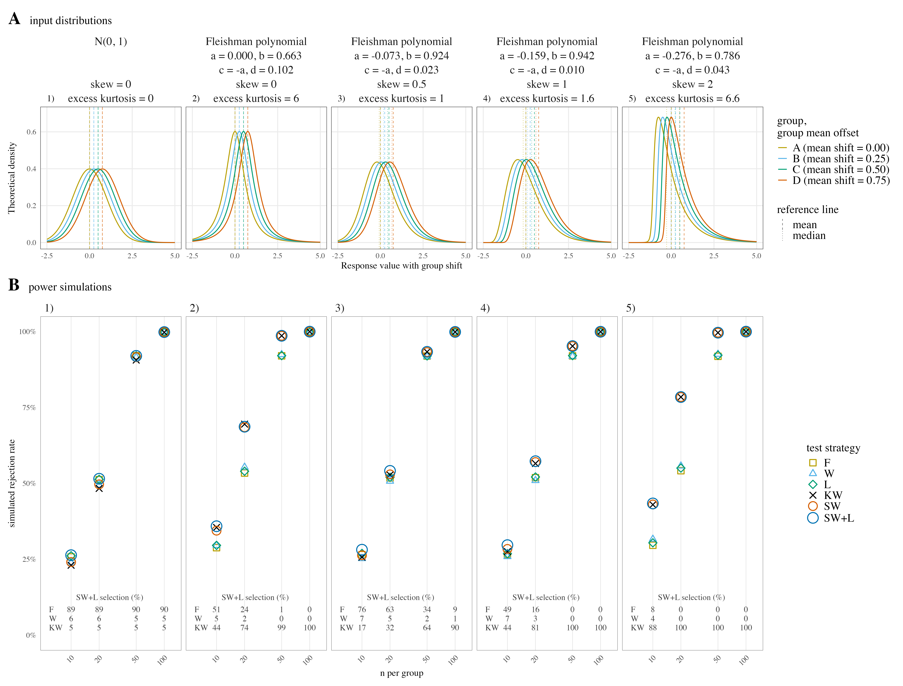
Figure 6.4: Route 1 power simulation with Fleishman input distributions. (A) Input distributions with group mean and median reference lines. (B) Simulated rejection rates for the six testing strategies.
In the normal input-distribution panel, the mean-based tests have slightly higher rejection rates than Kruskal–Wallis at small and moderate \(n\).
In the heavy-tailed symmetric panel and in the skewed panels, Kruskal–Wallis rejects more often under the imposed location-shift alternative, and SW+L increasingly follows it because the Shapiro–Wilk gate routes to KW.
This is a power gain only for the rank/location alternative; it is not evidence that the routed procedure is a better equal-means test.
Once \(n\) is large enough, all strategies approach 100% rejection, so the relevant information is mainly the route split and the small-\(n\) behaviour.
If Route 1 is read strictly as an equal-means machine, the simulations support Welch as the clean default.
If Route 1 is allowed to use input shape as a method switch, SW is the simpler automatic route.
SW+L is a model-display compromise: it preserves the Fisher/Student GLM branch when both residual normality and homoscedasticity are retained, but its Type I error cost must be read from the Type I simulations.
Thus the simulations do not prove that SW+L is the best equal-means procedure.
They show the price and benefit of the automatic route.
The price is that, under equal means but unequal distributions, SW and SW+L often report the rejection rate of KW after the hypothesis has changed.
The benefit is that the switch is visible and diagnostic-driven.
The final design decision is therefore not statistical optimality in the abstract, but which default the package wants to make explicit: Welch for fixed equal-means inference, SW for a parsimonious shape-based switch, or SW+L for the same switch while preserving the GLM Fisher/Student branch when its displayed assumptions pass.
The empirical cost of adding Levene is small in these simulations.
In the clean Type I setting with identical group distributions, SW ranges from 4.4% to 5.6% rejection and SW+L from 4.5% to 5.7%.
In the power simulation, the median difference SW+L minus SW is 0.004 percentage points, and the maximum is 2.25 percentage points.
Thus the second gate changes the route display much more than it changes the final rejection rate.
This supports using SW+L as the default assumption gate in visstat().
The point is not that the gate is the most powerful standalone test.
The point is that Fisher/Student is used only when the two displayed GLM assumptions pass, Welch is used when only homoscedasticity fails, and Kruskal–Wallis is used when the residual-normality gate fails.
The route percentages in the figures document these decisions directly.
6.4 Route-specific decision rules
The general branching is driven by input class and factor levels (Section 6.1). Within the selected route, additional rules determine the selected test and output; these route-specific rules are detailed below.
6.4.1 Route 1: Numeric response, categorical predictor
A numeric response with a categorical predictor with \(k\) “levels” (in the following “groups”) asks whether the response differs between groups.
Figure 6.5 expands the routing logic for tests of central tendencies.

Figure 6.5: Decision tree for the default Route 1 test selection (group_test = NULL). Shapiro–Wilk on model residuals determines whether the route remains mean-based or switches to rank-based tests; the Levene test then selects equal-variance or Welch-type procedures.
A linear model of Eq. (6.1) is fitted between the numeric response and the categorical predictor, and the model residuals of Eq. (6.2) are extracted.
In the default setting (group_test = NULL), Route 1 uses the displayed residual diagnostics of the Shapiro–Wilk (SW) and Levene test (L) (Levene 1960) as automatic gates:
The Shapiro–Wilk (SW) normality test functions as the residual-normality gate, because simulation studies report high power for small to moderate sample sizes (Razali and Wah 2011).
If the SW-test rejects residual normality (\(p_\text{SW} \le \alpha\)), robust non-parametric tests are selected: wilcox.test() (Eq. (C.1)) for two groups, or kruskal.test() (Eq. (C.2)) followed by Holm-adjusted pairwise.wilcox.test() for more than two groups.
If residual normality is not rejected, variance homogeneity the mean-centred Levene test (L) (Levene 1960) (Eq. (A.3)) gates the variance assessment:
For homoscedastic data (\(p_\text{L} > \alpha\)), t.test(var.equal = TRUE) (Eq. (B.1)) is applied for two groups, or Fisher’s aov() (Eq. (B.2)) for more than two groups.
For heteroscedastic data (\(p_\text{L} \le \alpha\)), Welch’s t.test() (Eq. (B.4)) is applied for two groups, or Welch’s oneway.test() (Eq. (B.6)) for more than two groups.
A type I error of the Levene test merely routes homoscedastic data to Welch’s t-test or Welch’s one-way ANOVA, which lose only negligible power when variances are in fact equal simple sizes are large. (Rasch, Kubinger, and Moder 2011; Delacre et al. 2019).
Post-hoc tests
ANOVA, Welch ANOVA, and Kruskal–Wallis are omnibus tests: a significant test result tells us that some group differs, but not which.
To identify the differing pairs, visstat() tests all pairwise comparisons among the factor levels, defining a family of tests.
Because the three omnibus tests rest on different assumptions, each branch uses a matching post-hoc procedure:
TukeyHSD()(Eq. (B.3)) afteraov()controls the family-wise error rate through the studentised range distribution under a common-variance assumption.games.howell()afteroneway.test()uses the Welch statistic (Eq. (B.4)) with separate variance estimates and Welch-adjusted degrees of freedom for each pair, making it the appropriate post-hoc procedure for the heteroscedastic Welch branch.pairwise.wilcox.test(p.adjust.method = "holm")afterkruskal.test()uses Holm’s step-down adjustment for the pairwise Wilcoxon tests in the Kruskal–Wallis branch.
The graphical results panel of these omnibus tests consists of box plots (see examples in Section 8.1) enriched with significance letters to visualise the post-hoc analysis: Pairs whose adjusted post-hoc \(p\)-value falls below \(\alpha\) are marked with different green significance letters below the box plots; pairs sharing a letter are not significantly different.
6.4.2 Route 2: Ordered response
An ordered categorical response with a categorical predictor or ordered categorical predictor is treated as a rank-based group comparison. The ordered response is converted to integer level codes and analysed with the Wilcoxon rank-sum test for two groups or the Kruskal–Wallis test for more than two groups.
6.4.3 Route 3: Numeric response, numeric predictor
Two numeric variables ask whether a numeric response changes with a numeric predictor.
By default, visstat() fits a simple linear regression (Eq. (8.1)).
and the diagnostic panel described in Section 6.2.3 is displayed.
If general linear model assumptions are violated, the corresponding p-values trigger warnings and recommendations, but no automatic model replacement.
The regression output is shown in Section 8.3.1.
6.4.4 Route 4: Two unordered factors
Two unordered factors ask whether two categorical variables are independent.
visstat() uses Pearson’s \(\chi^2\) test or Fisher’s exact test, depending on expected cell counts following Cochran’s rule (Cochran 1954): the \(\chi^2\) approximation is used if no expected cell count is less than 1 and no more than 20% of cells have expected counts below 5.
Yates’ continuity correction is applied by default to \(2 \times 2\) tables when the \(\chi^2\) approximation is used.
6.4.5 Optional rank-correlation mode
The four routes above describe the default, automatic test selection behaviour.
For ordered–ordered and numeric–numeric input vectors, the user can instead request a rank-correlation analysis by setting correlation = TRUE.
Both optional analyses test monotone association and are computed by cor.test(): Kendall’s \(\tau_b\) (Eq. (D.1)) with method = "kendall", exact = FALSE for two ordered variables, and Spearman’s \(\rho\) (Eq. (D.2)) with method = "spearman" for two numeric variables.
Kendall’s \(\tau_b\) corrects for ties present with few ordered levels (Agresti 2010; Xu et al. 2013).
Note that for numeric–numeric input, Pearson correlation is not implemented as a separate optional mode as in simple linear regression with an intercept, the two-sided test of zero slope and the two-sided Pearson correlation test return the same \(p\)-value.
7 Reported p-values and effect sizes effect_size()
The selected test output includes the p-value quantifying evidence against the null hypothesis and a complimentary effect_size estimate describing the magnitude of the selected comparison, association, or model fit on the scale
defined in Appendix 7 (Fritz, Morris, and Richler 2012; Levine and Hullett 2002).
While p-values strongly affected by sample size, effect-size, estimates are intended to support comparisons across studies regardless of sample size (Levine and Hullett 2002). Effect size is therefore an important determinant of power or required sample size or both [Cohen (2013); page 10].
The effect size takes the value zero when the null hypothesis is true and some other, test- specific non-zero value when the null hypothesis is false, it is an an index of degree of departure from the null hypothesis [Cohen (2013); page 10]
To avoid additional package dependencies, effect_size() extracts, where possible, the effect sizes from base R stats output, Otherwise it implements the remaining formulae internally.
The following tables summarises the statistical analysis with their respective effect sizes and formulae.
| Analysis | Effect size | Formula | Source |
|---|---|---|---|
| Student’s \(t\)-test | Hedges’ \(g_{s_p}\) (pooled) | \(g_{s_p}=J(N-2)\cdot(\bar{x}_1-\bar{x}_2)/s_p\) | Hedges 1981 |
| Welch’s \(t\)-test | Hedges’ \(g_{s^{*}}\) (non-pooled) | \(g_{s^{*}}=J(\nu^{*})\cdot(\bar{x}_1-\bar{x}_2)/s^{*}\) | Delacre et al. 2021 |
| Wilcoxon rank-sum | rank-biserial \(r\) | \(r=2\cdot W/(n_1\cdot n_2)-1\) | Kerby 2014 |
| Fisher’s ANOVA | \(\omega^2\) | \(\nu_1\cdot(F-1)/(\nu_1\cdot F+\nu_2+1)\) | Albers and Lakens 2018, Appendix A |
| Welch’s ANOVA | \(\omega^2\) (approx.) | \(\nu_1\cdot(F_W-1)/(\nu_1\cdot F_W+\nu_2+1)\) | F-form from Albers and Lakens 2018, Appendix A |
| Kruskal–Wallis | \(\eta_H^2\) | \((H-k+1)/(N-k)\) | Kelley 1935 |
| Simple linear regression | \(R^2\) | \(R^2=1-SS_\text{res}/SS_\text{tot}\) |
summary(lm())\(r.squared</code></td>
</tr>
<tr>
<td>Spearman</td>
<td>\)\(</td>
<td>\)=r((x),(y))\(</td>
<td><code>cor.test()\)estimate
|
| Kendall | \(\tau_b\) | \(\tau_b=(C-D)/\sqrt{\left(n_0-n_1\right)\left(n_0-n_2\right)}\) |
cor.test()$estimate
|
| Pearson \(\chi^2\) (\(R\times C\)) | Cramér’s \(V\) | \(V_{R\times C}=\sqrt{\chi^2/\left(N\cdot(\min(R,C)-1)\right)}\) | Cohen 2013, p. 223 |
| Pearson \(\chi^2\) (\(2\times 2\)) | \(\phi\) | \(\phi=\sqrt{\chi^2/N}\) | Cohen 2013, p. 223 |
| Fisher’s exact (\(2\times 2\)) | conditional odds ratio |
fisher.test()\(estimate</code></td>
<td><code>fisher.test()\)estimate
|
Here, Hedges’ small-sample correction factor is
\[\begin{equation*} J(\nu) = \frac{\Gamma(\nu/2)} {\sqrt{\nu/2}\;\Gamma((\nu-1)/2)}, \end{equation*}\]
where \(J\) denotes Hedges’ correction factor. For Student’s \(t\)-test, \(\nu=N-2\); for Welch’s \(t\)-test, \(\nu=\nu^{*}\) with
\[\begin{equation*} \nu^{*} = \frac{(n_1-1)(n_2-1)(s_1^2+s_2^2)^2} {(n_2-1)s_1^4+(n_1-1)s_2^4}. \end{equation*}\]
The non-pooled average-variance standardizer is
\[\begin{equation*} s^{*} = \sqrt{\frac{s_1^2+s_2^2}{2}}, \end{equation*}\]
where \(s^{*}\) denotes the average-variance standardizer.
\(\nu_1\) and \(\nu_2\) denote the numerator and denominator degrees of freedom; for Fisher’s ANOVA, \(\nu_1=k-1\) and \(\nu_2=N-k\); for Welch’s ANOVA, \(\nu_1=k-1\) and \(\nu_2\) is the usually fractional denominator degree of freedom returned by oneway.test().
For simple linear regression, the coefficient of determination is
\[\begin{equation} R^2 = 1 - \frac{SS_\text{res}}{SS_\text{tot}}, \tag{7.1} \end{equation}\]
where \(SS_\text{res}=\sum_{i=1}^{N}(y_i-\hat{y}_i)^2\) is the residual sum of squares, \(\hat{y}_i\) is the predicted value, and \(SS_\text{tot}=\sum_{i=1}^{N}(y_i-\bar{y})^2\) is the total sum of squares.
All other variables used in the effect-size table are defined in the correspoding “Analysis” section of the Appendix.
8 Usage and Examples
The examples follow the routes outlined in Section 6.1 and are chosen to trigger every branch.
Within the group-comparison routes, examples are ordered such that the two-group case is followed by its generalisation to more than two groups: Student’s t-test by Fisher’s one-way ANOVA, Welch’s t-test by Welch’s one-way ANOVA, and Wilcoxon rank-sum by Kruskal–Wallis.
Where needed, the example descriptions add interpretive details on the graphical output, such as significance letters, regression bands, or mosaic plots.
8.1 Route 1: Numeric response, categorical predictor
8.1.1 Student’s t-test and Fisher’s one-way ANOVA
8.1.1.1 Student’s t-test
The ToothGrowth dataset records odontoblast length in 60 guinea pigs given vitamin C by orange juice (OJ) or ascorbic acid (VC).
With delivery method as predictor and length as response, the assumption-diagnostic panel shows no residual-normality or variance-homogeneity violation.
visstat() therefore selects Student’s t-test, and the result panel shows the two-group box plot with the selected test result.
student_ttest <- visstat(ToothGrowth$supp, ToothGrowth$len)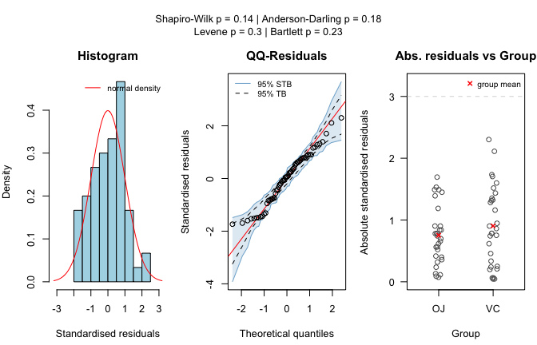
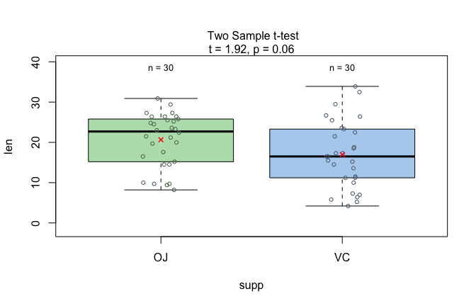
Figure 8.1: Student’s t-test applied to the ToothGrowth dataset (len vs. supp). Assumption diagnostics (Shapiro–Wilk does not reject residual normality; Levene does not reject residual variance homogeneity) select the equal-variance mean-based path, followed by box plots with the Student t-test result.
8.1.1.2 Fisher’s one-way ANOVA with Tukey HSD post-hoc comparisons with methods demonstration
The PlantGrowth dataset records yields (as measured by dried weight of plants) for a control group and two treatment groups.
This dataset serves a double purpose: it demonstrates both a branching result and the visstat() S3 methods print(), summary(), and plot() (Section 5.1).
anova_plantgrowth <- visstat(PlantGrowth$group, PlantGrowth$weight)In this branch visstat() generates two plots: the assumption-diagnostic panel (which = 1) and the result panel with box plots and post-hoc significance letters (which = 2).
Calling plot() without which first lists both available plots:
plot(anova_plantgrowth)## Plot [1] captured. Use plot(obj, which = 1) to display.## Plot [2] captured. Use plot(obj, which = 2) to display.Figure 8.2(a) replays the assumption-diagnostic panel (which = 1).
With control and treatment groups as predictor and plant weight as response, Shapiro–Wilk does not reject normality of the model residuals and levene.test() does not reject homoscedasticity, so visstat() takes the equal-variance mean-based path.
Figure 8.2(b) replays the result panel (which = 2).
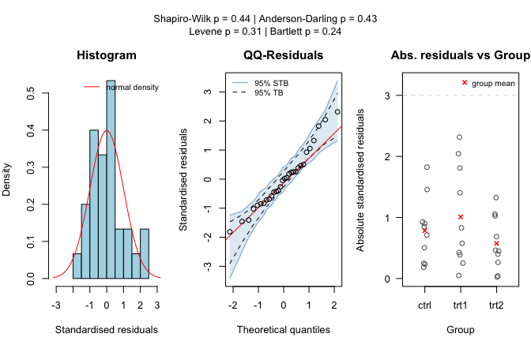
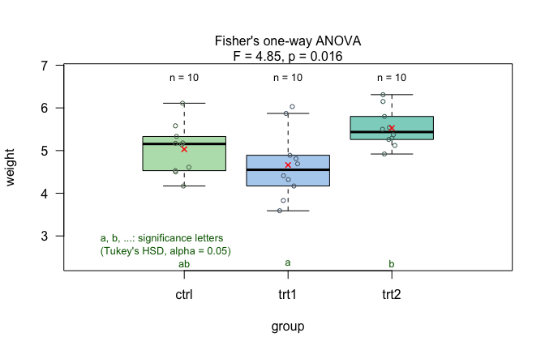
Figure 8.2: PlantGrowth Fisher’s one-way ANOVA (weight vs. group). (a) Assumption-diagnostic panel. (b) Result panel with Tukey HSD significance letters (\(\alpha = 0.05\)).
The omnibus F-test is significant at \(\alpha = 0.05\), and the Tukey HSD post-hoc comparison finds no significant difference between the control group and either treatment, but the difference between trt1 and trt2 is significant.
To save the graphics, call visstat() with graphicsoutput; the file paths are returned in the "plot_paths" attribute.
Here, plotName is set explicitly so that the output names are stable.
anova_plantgrowth_stored <- visstat(
PlantGrowth$group,
PlantGrowth$weight,
graphicsoutput = "png",
plotName = "anova_plantgrowth",
plotDirectory = tempdir()
)
paths <- attr(anova_plantgrowth_stored, "plot_paths")
print(basename(paths))## [1] "glm_assumptions_anova_plantgrowth.png"
## [2] "anova_plantgrowth.png"print() lists the returned components:
print(anova_plantgrowth)## Object of class 'visstat'
##
## Available components:
## [1] "summary statistics of ANOVA" "post-hoc analysis "
## [3] "conf.level" "effect_size"summary() prints the full object, including assumption tests, post-hoc comparisons, and effect size.
summary(anova_plantgrowth)## Summary of visstat object
##
## --- Named components ---
## [1] "summary statistics of ANOVA" "post-hoc analysis "
## [3] "conf.level" "effect_size"
##
## --- Contents ---
##
## $summary statistics of ANOVA:
## Df Sum Sq Mean Sq F value Pr(>F)
## fact 2 3.766 1.8832 4.846 0.0159 *
## Residuals 27 10.492 0.3886
## ---
## Signif. codes: 0 '***' 0.001 '**' 0.01 '*' 0.05 '.' 0.1 ' ' 1
##
## $post-hoc analysis :
## Tukey multiple comparisons of means
## 95% family-wise confidence level
##
## Fit: aov(formula = samples ~ fact)
##
## $fact
## diff lwr upr p adj
## trt1-ctrl -0.371 -1.0622161 0.3202161 0.3908711
## trt2-ctrl 0.494 -0.1972161 1.1852161 0.1979960
## trt2-trt1 0.865 0.1737839 1.5562161 0.0120064
##
##
## $conf.level:
## [1] 0.95
##
## $effect_size:
## $name
## [1] "omega-squared"
##
## $estimate
## [1] 0.2040788
##
## $effect_size_method
## [1] "Omega-squared for one-way ANOVA"8.1.2 Welch’s t-test and Welch’s one-way ANOVA
8.1.2.1 Welch’s t-test
The Motor Trend Car Road Tests dataset (mtcars) contains 32 observations, where mpg denotes miles per (US) gallon and am represents the transmission type (0 = automatic, 1 = manual).
With binary factor am and continuous response mpg, the assumption-diagnostic panel shows that Shapiro–Wilk does not reject normality of the model residuals, while the Levene test detects heteroscedasticity.
The routing therefore leads to Welch’s t-test rather than Student’s t-test, and the result panel shows the corresponding two-group comparison.
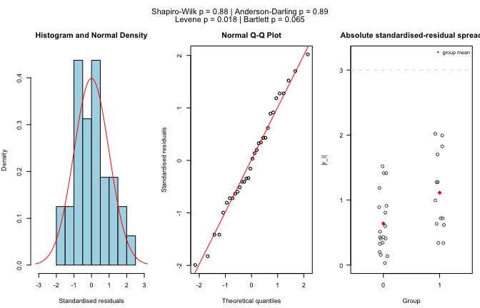
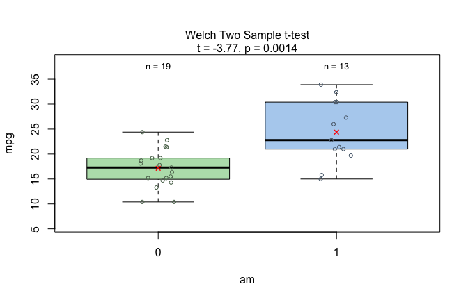
Figure 8.3: Welch’s t-test applied to the mtcars dataset (mpg vs. am). Assumption diagnostics (Shapiro–Wilk does not reject residual normality; Levene rejects residual variance homogeneity) select the unequal-variance mean-based path, followed by box plots with the Welch t-test result.
8.1.2.2 Welch’s heteroscedastic one-way ANOVA with Games–Howell post-hoc comparisons
In the iris dataset, using Species as predictor and Sepal.Length as response, the assumption-diagnostic panel shows that Shapiro–Wilk does not reject normality of the model residuals, whereas the Levene test rejects homoscedasticity at the given \(\alpha = 5\%\).
visstat() therefore selects Welch’s heteroscedastic one-way ANOVA (oneway.test()) and applies Games–Howell post-hoc comparisons.
The result panel shows the box plots and Games–Howell significance letters.
welch_anova_iris <- visstat(iris$Species, iris$Sepal.Length)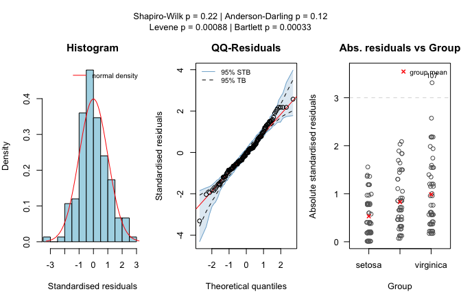
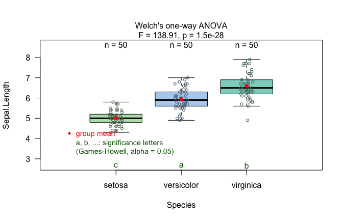
Figure 8.4: Welch’s heteroscedastic one-way ANOVA applied to the iris dataset (Sepal.Length vs. Species). Assumption diagnostics (Shapiro–Wilk does not reject residual normality; Levene rejects residual variance homogeneity) select the unequal-variance mean-based path, followed by box plots with Games–Howell significance letters (\(\alpha = 0.05\)).
8.1.3 Wilcoxon rank-sum test and Kruskal–Wallis test
8.1.3.1 Wilcoxon rank-sum test
The warpbreaks dataset records thread breaks during weaving.
Using wool type (A or B) as predictor and the number of breaks as response, the assumption-diagnostic panel shows that the Shapiro–Wilk test rejects normality of the model residuals.
visstat() therefore selects the Wilcoxon rank-sum test, and the result panel shows the rank-based two-group comparison.
wilcoxon_stats <- visstat(warpbreaks$wool, warpbreaks$breaks)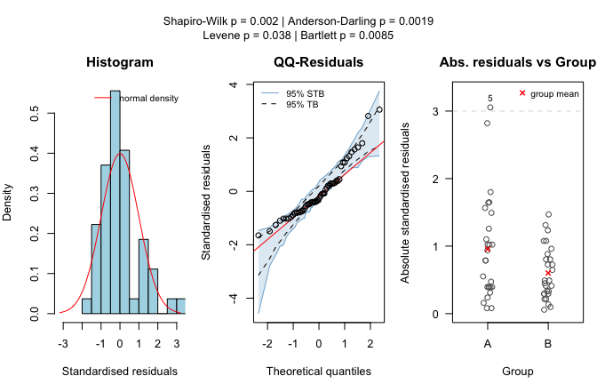
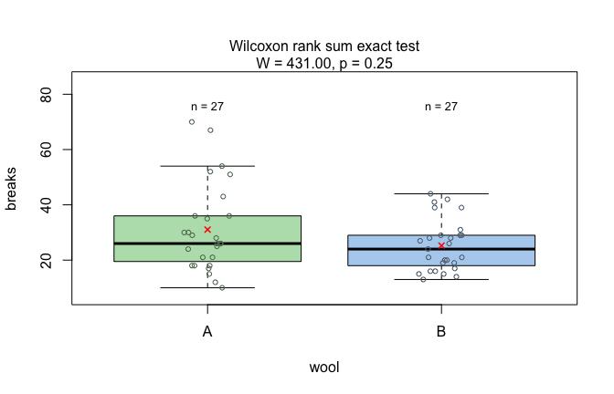
Figure 8.5: Wilcoxon rank-sum test applied to the warpbreaks dataset (breaks vs. wool). Assumption diagnostics (Shapiro–Wilk rejects residual normality; non-parametric path selected) and box plots with the Wilcoxon test result.
8.1.3.2 Kruskal–Wallis rank sum test with pairwise Wilcoxon post-hoc comparisons
In the iris data set, Petal.Width by Species follows a different route than Sepal.Length by Species above (Figure 8.4), because the assumption diagnostics differ.
The assumption-diagnostic panel shows clear departures from normality, and both normality tests return very small \(p\)-values.
Since Shapiro–Wilk falls below \(\alpha\), visstat() switches to kruskal.test() followed by Holm-adjusted pairwise.wilcox.test().
The result panel shows the box plots and Holm-adjusted significance letters; all three species differ significantly in petal width, as indicated by distinct letters.
kruskal_iris <- visstat(iris$Species, iris$Petal.Width)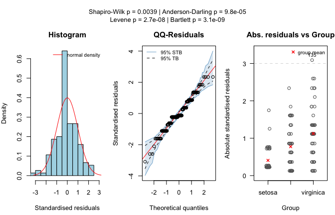
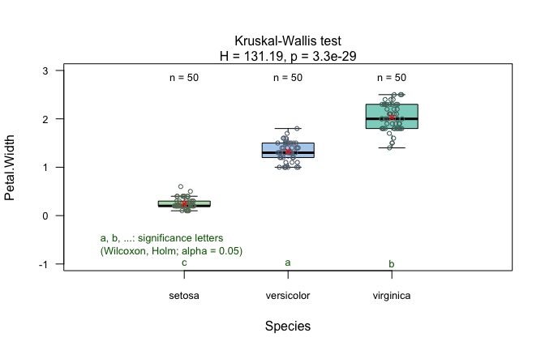
Figure 8.6: Kruskal-Wallis test applied to the iris dataset (Petal.Width vs. Species). Assumption diagnostics (Shapiro–Wilk rejects residual normality; non-parametric path selected) and box plots with Holm-adjusted pairwise Wilcoxon significance letters (\(\alpha = 0.05\)).
8.2 Route 2: Ordered response
8.2.1 Ordered response, categorical factor
8.2.1.1 Wilcoxon rank-sum test with ordered response
The Titanic dataset contains passenger counts by, among other variables, passenger class and gender.
After expanding the table to individual rows, passenger class is treated as ordered and gender as a two-level predictor.
visstat() selects the Wilcoxon rank-sum test.
The result panel therefore displays the rank-test comparison on the numeric level scores (see Figure 8.7, left).
titanic_df <- counts_to_cases(as.data.frame(Titanic))
titanic_df$Class <- ordered(titanic_df$Class,
levels = c("1st", "2nd", "3rd", "Crew")
)
wilcox_ordered <- visstat(titanic_df$Sex, titanic_df$Class)## Warning: Ordered response detected. Converting to integer level codes for
## non-parametric analysis.8.2.1.2 Kruskal–Wallis test with ordered response
With three predictor groups, visstat() routes to kruskal.test() followed by Holm-adjusted pairwise.wilcox.test().
The result panel shows the Kruskal–Wallis comparison and Holm-adjusted significance letters on the numeric level scores (see Figure 8.7, right).
A synthetic survey records perceived car comfort on a five-point scale across three markets.
set.seed(123)
market <- factor(rep(c("Europe", "North America", "Asia"), each = 50))
comfort_numeric <- c(
sample(1:5, 50, replace = TRUE, prob = c(0.30, 0.30, 0.20, 0.15, 0.05)),
sample(1:5, 50, replace = TRUE, prob = c(0.10, 0.20, 0.40, 0.20, 0.10)),
sample(1:5, 50, replace = TRUE, prob = c(0.05, 0.10, 0.20, 0.35, 0.30))
)
survey_data_3 <- data.frame(
market = market,
comfort = ordered(comfort_numeric)
)
kruskal_ordered <- visstat(comfort ~ market, data = survey_data_3)## Warning: Ordered response detected. Converting to integer level codes for
## non-parametric analysis.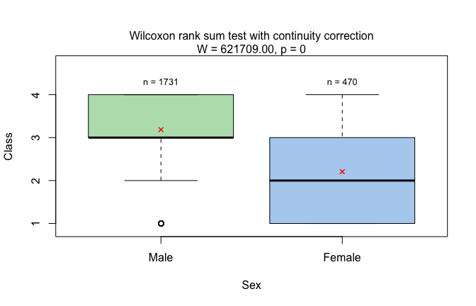
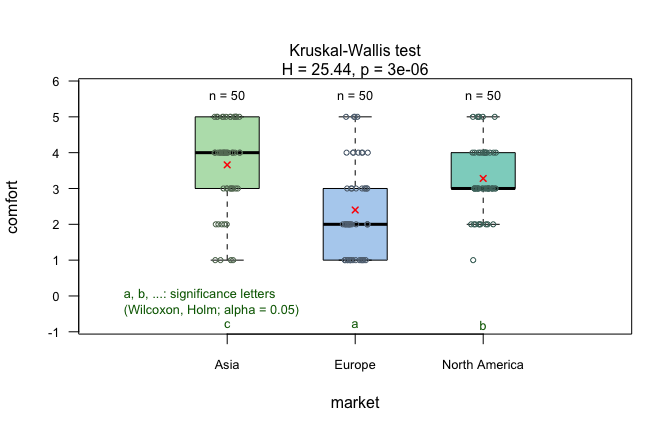
Figure 8.7: Wilcoxon rank-sum test for ordered passenger class by sex in the expanded Titanic data (left) and its multi-group generalisation, the Kruskal-Wallis test for ordered car comfort ratings by market (right). Holm-adjusted pairwise Wilcoxon post-hoc comparisons are shown as significance letters for the Kruskal-Wallis example (\(\alpha = 0.05\)).
8.3 Route 3: Numeric response, numeric predictor
8.3.1 Linear regression
The swiss dataset records standardised fertility and socio-economic indicators for 47 French-speaking Swiss provinces in 1888.
We examine how the share of draftees achieving the highest army examination score (Examination) predicts the fertility measure (Fertility), with conf.level = 0.99.
The diagnostic panel in Figure 8.8, left, shows that both normality tests pass and the Breusch–Pagan test confirms homoscedasticity, supporting the linear model.
The assumption-diagnostic panel is displayed, but its checks do not trigger automatic model replacement.
The regression plot shows the fitted line
\[\begin{equation}
\hat{y}_i = b_0 + b_1 x_i
\tag{8.1}
\end{equation}\] with the point estimates \(b_0\) and \(b_1\) for the unknown parameters \(\beta_0\) and \(\beta_1\) of the linear regression model in Eq.
(6.1) with one predictor.
It is displayed with pointwise confidence and prediction bands at the specified conf.level.
The returned object contains the regression statistics, residual-normality tests, pointwise confidence and prediction bands, and the coefficient of determination \(R^2\) (Eq. (7.1)) as effect size.
linreg_swiss <- visstat(swiss$Examination, swiss$Fertility, conf.level = 0.99)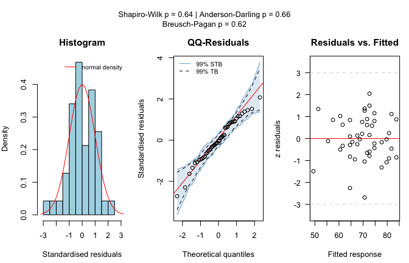
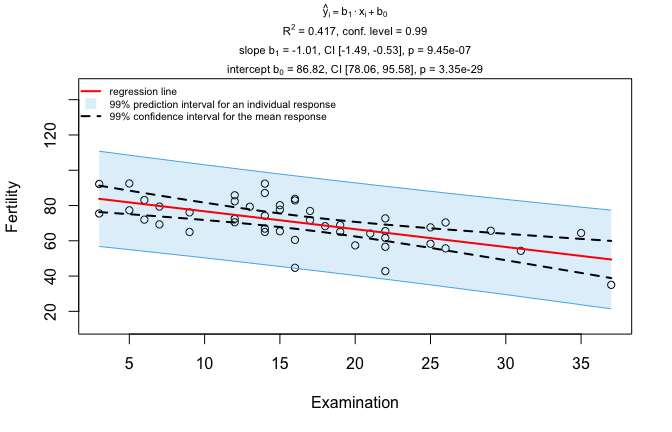
Figure 8.8: Simple linear regression of Fertility on Examination for the swiss dataset (conf.level = 0.99). Left: residual-diagnostic panel with histogram, normal Q-Q plot with simultaneous tolerance band (STB) and point-wise tolerance band (TB), and residuals versus fitted values. Right: scatter plot with fitted regression line, 99% prediction interval for an individual response, and 99% confidence interval for the mean response.
The airquality ozone example shows the limits of the automated approach when the default linear model is not an adequate final model.
visstat() identifies assumption violations and points to analyses outside the automated decision tree.
A default visstat() call for ozone concentration (Ozone) as a function of wind speed (Wind) fits the simple linear model.
ozone_lm <- visstat(airquality$Wind, airquality$Ozone)## Warning: Statistical assumptions violated:
## Normality of residuals violated (Shapiro-Wilk p = 0.00522 )
## Homoscedasticity violated (Breusch-Pagan p = 0.00595 )
## Analysis proceeded but interpret results cautiously.## RECOMMENDATION: Consider exploring alternatives outside visstat() such as data transformations,
## generalised linear models, or robust regression. For a non-causal alternative
## consider rerunning with correlation = TRUE.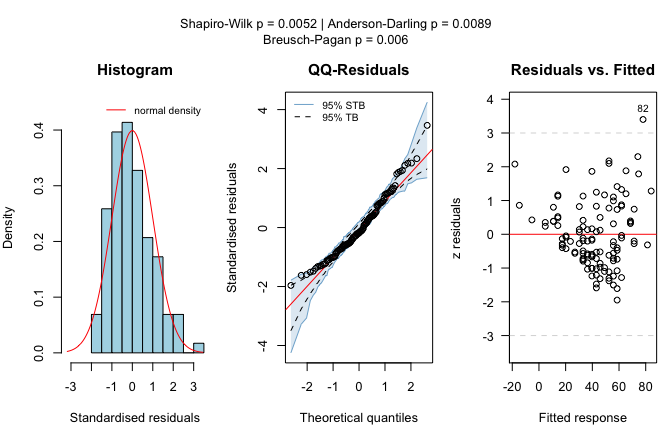
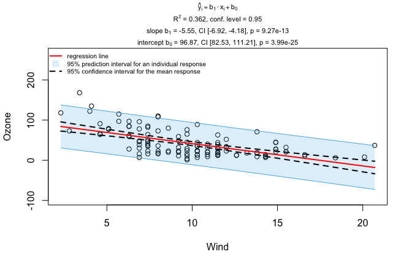
Figure 8.9: Default simple linear regression for Ozone by Wind in the airquality dataset. Assumption diagnostics flag non-normal model residuals and heteroscedasticity before alternative routes are considered.
The diagnostic output flags non-normal model residuals and heteroscedasticity.
In the “Residual vs. fitted” diagnostic panel we observe an increase in spread from left to right, forming a funnel shape that indicates variance increases with fitted values.
The optional Spearman analysis for the same dataset is shown in Section 8.5.
The following example shows a Gamma generalised linear model outside visstat().
8.3.2 Model exploration outside visstat()
As a model outside of visstat(), we fit a Gamma generalised linear model with log link.
The Gamma family is suited here because Ozone is strictly positive and continuous, and its variance grows with the fitted values — the structure detected by the Breusch–Pagan test.
The log link guarantees positive fitted values.
# Gamma model with log mapping
model_gamma <- glm(Ozone ~ Wind, data = airquality, family = Gamma(link = "log"))
model_gamma$aic## [1] 1040.021
# Comparison with AIC of simple linear regression
model_lm <- glm(Ozone ~ Wind, data = airquality)
model_lm$aic## [1] 1093.187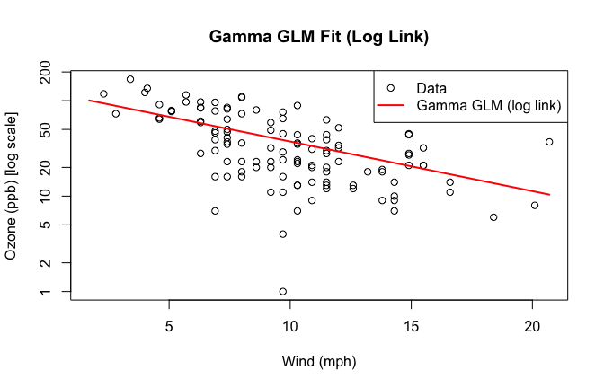
Figure 8.10: Gamma GLM with log link fitted to the airquality dataset Ozone vs. Wind. The red curve shows the fitted Gamma GLM; the y-axis is on a log scale.
For a Gamma generalised linear model with log link, standardised deviance residuals are asymptotically standard normal; we use Shapiro–Wilk and Anderson–Darling as approximate checks of the fitted model:
# Extract standardised deviance residuals
std_dev_res <- rstandard(model_gamma, type = "deviance")
# Validate using the Shapiro-Wilk normality test
shapiro.test(std_dev_res)##
## Shapiro-Wilk normality test
##
## data: std_dev_res
## W = 0.99245, p-value = 0.7817
# Validate using the Anderson-Darling normality test
nortest::ad.test(std_dev_res)##
## Anderson-Darling normality test
##
## data: std_dev_res
## A = 0.198, p-value = 0.8853The Gamma model improves the model fit according to the Akaike Information Criterion (Akaike 1974), which decreases from 1093.2 to 1040.0.
The increase in the Shapiro–Wilk \(p\)-value from \(p_{SW} = 0.0052\) in the simple linear regression to \(p_{SW} = 0.78\) is more consistent with residual normality.
This comparison illustrates how assumption warnings from visstat() can motivate model exploration outside the automated decision tree.
8.4 Route 4: Two unordered factors
The following examples are based on the HairEyeColor contingency table, which is converted to the column-based data frame expected by visstat() using the helper function counts_to_cases().
8.4.1 Pearson’s \(\chi^2\) test
For a contingency table with \(R\) response levels and \(C\) predictor levels, Pearson’s \(\chi^2\) test (Eq. (E.2)) shows a grouped column plot of row percentages with the \(p\)-value in the title, followed by a mosaic plot from vcd (Meyer, Zeileis, and Hornik 2006; Meyer et al. 2024).
Each tile corresponds to one cell of the contingency table.
The tile colour represents the Pearson residual value (Eq. (E.1)) on a blue–red colour scale; the tile size reflects the cell count.
With Eye and Hair from HairEyeColor, all expected cell counts exceed the Cochran thresholds (Cochran 1954), so the \(4 \times 4\) \(\chi^2\) approximation is used.
hair_eye_df <- counts_to_cases(as.data.frame(HairEyeColor))
visstat(hair_eye_df$Eye, hair_eye_df$Hair)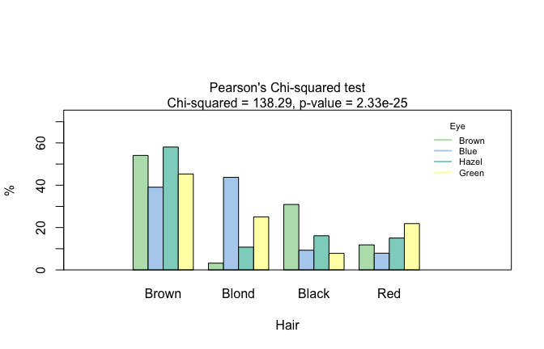
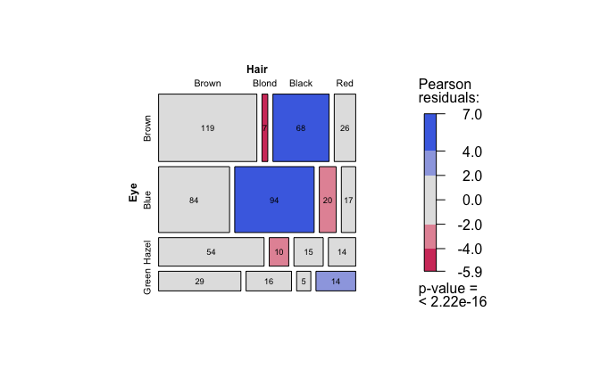
Figure 8.11: Pearson’s \(\chi^2\) test applied to the HairEyeColor dataset. Grouped bar chart of eye colour by hair colour and mosaic plot with tiles coloured by Pearson residuals (blue: over-represented, red: under-represented).
Here, cells for black hair and brown hair, as well as blond hair and blue eyes, show counts above the expectation.
8.4.2 Pearson’s \(\chi^2\) test with Yates’ continuity correction
Restricting HairEyeColor to black or brown hair and brown or blue eyes yields a \(2 \times 2\) table.
Cochran’s rule is still satisfied, so visstat() applies Pearson’s \(\chi^2\) test with Yates’ continuity correction.
The resulting grouped column plot is shown in Figure 8.12, left.
hair_bb_eyes_bb <- HairEyeColor[1:2, 1:2, ]
hair_bb_eyes_bb_df <- counts_to_cases(
as.data.frame(hair_bb_eyes_bb)
)
yates_stats <- visstat(
hair_bb_eyes_bb_df$Eye,
hair_bb_eyes_bb_df$Hair
)
yates_stats$effect_size## $name
## [1] "phi"
##
## $estimate
## [1] 0.1709571
##
## $effect_size_method
## [1] "Phi coefficient for 2 x 2 contingency table"The returned effect size is \(\phi = 0.17\), which, using Cohen’s benchmarks for \(2 \times 2\) tables (Cohen 2013, 227), is a small association. The p-value instead is below \(\alpha = 0.05\) ($p = 0.0035$) and thus significant. This example underlines the importance of effect sizes: a significant p-value can be accompanied by a small effect size measure.
8.4.3 Fisher’s exact test
Restricting HairEyeColor to male participants with black or brown hair and hazel or green eyes yields a \(2 \times 2\) table where one expected frequency is less than 5, violating Cochran’s rule (Cochran 1954).
visstat() therefore applies Fisher’s exact test.
The graphical output shows absolute counts with count labels above each bar and the \(p\)-value in the title, so the small cell counts that trigger the exact test remain visible (see Figure 8.12, right).
hair_eye_male <- HairEyeColor[, , 1]
black_brown_hazel_green <- hair_eye_male[1:2, 3:4]
black_brown_hazel_green_df <- counts_to_cases(
as.data.frame(black_brown_hazel_green)
)
fisher_stats <- visstat(
black_brown_hazel_green_df$Eye,
black_brown_hazel_green_df$Hair
)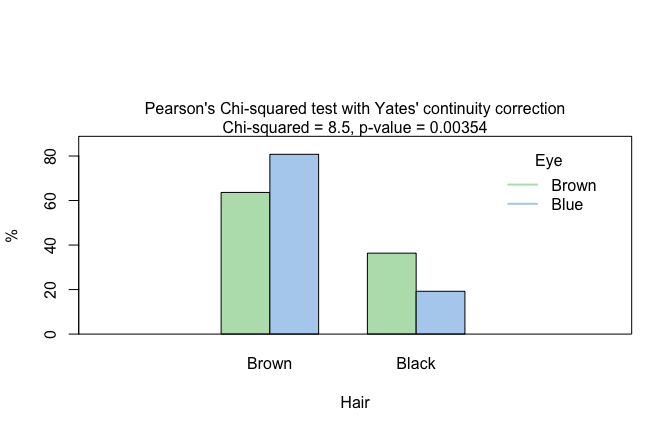
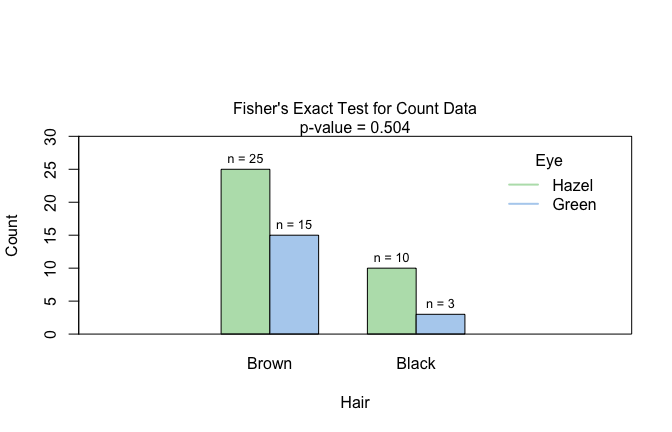
Figure 8.12: Two \(2 \times 2\) categorical routes in HairEyeColor: Yates-corrected Pearson \(\chi^2\) when Cochran’s rule is satisfied (black/brown hair and brown/blue eyes; left), and Fisher’s exact test when expected counts are too small (male participants, black/brown hair, hazel/green eyes; right). The Yates-corrected plot shows row percentages; the Fisher plot shows absolute counts.
8.5 Optional rank-correlation mode
Correlation analysis requires the explicit flag correlation = TRUE.
8.5.1 Kendall rank correlation with correlation = TRUE
A hypothetical survey of 150 secondary-school students records alcohol consumption frequency and academic performance on five-point ordinal scales. A negative monotone association is induced by construction: students who consume alcohol more frequently tend to have lower academic performance. The Kendall result is shown in Figure 8.13, left.
set.seed(42)
n <- 150
xs <- sample(1:5, n, replace = TRUE)
ys <- pmin(5, pmax(1, (6 - xs) + sample(-1:1, n, replace = TRUE)))
likert_alc <- c("never", "rarely", "sometimes", "often", "always")
likert_perf <- c("poor", "fair", "ok", "good", "great")
alcohol <- ordered(likert_alc[xs], levels = likert_alc)
performance <- ordered(likert_perf[ys], levels = likert_perf)
kendall_result <- visstat(performance, alcohol, correlation = TRUE)
spearman_air <- visstat(airquality$Wind, airquality$Ozone, correlation = TRUE)
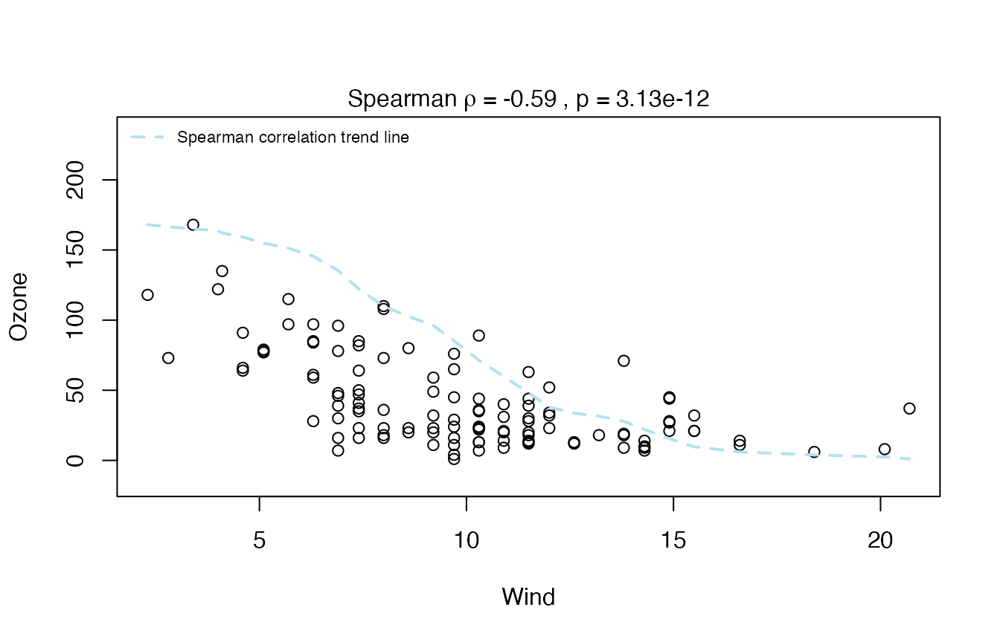
Figure 8.13: Rank-based correlations: Left: Kendall’s \(\tau_b\) for a hypothetical survey (\(n = 150\)): alcohol consumption frequency vs. academic performance. Right: Spearman rank correlation of Wind and Ozone from the airquality dataset (correlation = TRUE; right). Both plots annotate the corresponding effect measure and \(p\)-value.
9 Discussion
For every chosen test, visStatistics provides both a visualisation and a full report covering the test itself, and, where applicable, its assumption checks and post-hoc comparisons.
The report is complemented by each test’s effect size (see the effect-size table): A sufficiently large sample makes even a negligible difference significant, so the p-value must be read alongside the magnitude of the effect (Levine and Hullett 2002; Cohen 2013, 10).
The “right” test is thus per se not the one with the smallest p-value, but one whose assumptions hold, and whose effect is large enough to matter.
For tests of central tendency, p-values from assumption tests of normality and homoscedasticity are used as routing criteria in the default settings. However, no single assumption test maintains optimal Type I error rates and statistical power across all distributions (Olejnik and Algina 1987) and sample sizes, and p-values obtained from these tests may be unreliable if their assumptions are violated.
Assessing assumptions solely through p-values can lead to both type I errors (false positives) and type II errors (false negatives). In large samples, even minor, random deviations from the null hypothesis can result in statistically significant p-values, leading to type I errors. Conversely, in small samples, substantial violations of the assumption may not reach statistical significance, resulting in type II errors (Kozak and Piepho 2018). Thus, the robustness of statistical tests depends on both the sample size and the shape of the underlying distribution.
In tests comparing group means, the Central Limit Theorem (CLT) allows us to bypass the formal assessment of the residual normality in large samples: By the CLT, the sampling distribution of the group means approaches normality as the group sizes grow, regardless of the shape of the underlying distribution. For finite group sizes this holds only approximately, but it implies that in large enough samples a rejected residual-normality test no longer necessarily threatens the validity of the mean-based parametric routes, including both Fisher/Student and Welch tests. This raises the practical question of what should count as a “large enough” sample. The answer depends on the shape of the underlying distribution, especially skewness and tail weight (Lumley et al. 2002), and is examined in Section 6.3.
Monte Carlo studies of robustness to non-normality (Blanca et al. 2017; Fagerland 2012; Delacre et al. 2019) examine both mean-based families against a common criterion: under the null hypothesis of equal population means, and at a significance level of \(\alpha = 5\%\), the empirical Type I error rate must stay within Bradley’s liberal robustness bounds of \([2.5\%, 7.5\%]\) (Bradley 1978).
In the context of homoscedastic comparison, Blanca et al. (Blanca et al. 2017) demonstrated in a three-group design that the empirical Type I error of Fisher’s one-way ANOVA — whose two-group special case is Student’s t-test — remained within Bradley’s bounds across skewness values up to 2 and kurtosis values up to 6, at group sizes ranging from 5 to 100.
In our own Route 1 simulations, Figure 6.2 is the clean Type I check: all groups share the same input distribution, so both the equal-means null and the rank-distribution null are true. The panel legend reports final-test rejection rates, Bradley’s 2.5%–7.5% interval, and the route split for SW and SW+L. Figure 6.3 keeps the equal-means null true but varies the group standard deviations and sample-size pairings, so the skewed columns can change medians and mean ranks as well as variances. Figure 6.4 adds ordered location shifts and makes the route split visible alongside the rejection rates. Taken together, the three Route 1 figures show the effect of the Shapiro–Wilk plus Levene gate relative to SW alone, and where Welch or Kruskal–Wallis become the final test.
For the Student’s t-test, the margin is wider, with a Type I error rate between 4% and 5% for sample sizes of 10 or more, as long as skewness is up to 4 and there are moderate differences in spread (Fagerland 2012).
In the context of heteroscedastic comparison, Delacre et al. (Delacre et al. 2019) established that the empirical Type I error of Welch’s one-way ANOVA – whose two-group special case is Welch’s t-test – remained within Bradley’s bounds at approximately 50 observations per group for up to four groups, a result which was confirmed by our own simulations 6.3) for skewness up to 2 and excess curtosis of 6.6 and minimal indivual group sizes of 25.
With more than four groups, 50 observations still suffice for skewness up to 2, for higher skewness roughly 100 per group are required (Delacre et al. 2019).
Large n: SW over-rejects skewed data \(\to\) routes to rank; passes near-normal data \(\to\) mean. The over-rejection is not a flaw — it sends skewed samples to the rank test, the more powerful and more appropriate question there. Forcing means above 50 was never justified. Small n: SW is underpowered \(\to\) usually passes \(\to\) mean test; only strong skew is caught \(\to\) rank. For skew<1 this is correct (mean \(\approx\) median, t and rank essentially equal power); missed mild skew costs little (Bridge). Cost: the conditional pretest inflates Type I only slightly (~0.05–0.07, within Bradley).
Large n: SW over-rejects mildly skewed data \(\to\) routes to rank; passes near-normal data \(\to\) mean. The over-rejection is a flaw — it sends nearly normal samples to the rank test, minimal loss of power, change of null
visstat routes on a residual-normality p-value, a sample-size-dependent proxy for the shape (skewness, tail weight) that actually governs whether the mean is a faithful estimand. A shape-selector would be more principled (Hall and Padmanabhan 1997), but sample shape is poorly estimated in the small samples where the choice matters and admits no non-arbitrary threshold. SW is used because it is the transparent diagnostic already displayed, not because it is the optimal selection statistic.
For smaller group-specific sample sizes, a Shapiro–Wilk test is used to route between mean-based and rank-based methods, as simulation studies suggest that it has the highest power among normality tests in small to moderate (\(n = 10\) to 100) sample sizes (Razali and Wah 2011).
Because the Shapiro–Wilk test’s power against non-normality is driven primarily by asymmetry at small-to-moderate sample sizes (Razali and Wah 2011), a rejected residual-normality test acts here as a practical proxy for the skewness that determines whether the mean is a faithful summary (Eq. (A.1); supplementary simulation).
Shapiro–Wilk serves as a proxy for skewness, the feature deciding whether the mean is a faithful summary: its power against non-normality is driven primarily by asymmetry at small-to-moderate n n (Razali and Wah 2011). It is a normality verdict, not a skewness magnitude — a proxy, not a skewness test. Pre-testing distorts the error rate of any single conditional arm, yet the residual-normality-gated procedure holds the nominal level as a whole (Rochon, Gondan, and Kieser 2012), reproduced across input distributions from skew 0 to 6 (supplementary); the worst that can be said of the gate is that it is unnecessary, not that it inflates Type I.
Shapiro–Wilk acts as a skewness proxy in the routing: its power against non-normality is driven primarily by asymmetry (Razali and Wah 2011), so the gate effectively responds to skew. In large samples it rejects even mild skew and routes such data to the rank branch, at negligible cost — rank tests retain ~95% efficiency under normality and gain power under skew (Harrell 2026; Bridge and Sawilowsky 1999) (supplementary)
Shapiro–Wilk acts as a skewness-sensitive gate: it has high power against skewed alternatives at small-to-moderate N (Razali and Wah 2011). For large N it rejects even mild skew and routes such data to the rank branch, at negligible cost — rank tests retain ~95% efficiency under normality and gain power under skew (Harrell 2026; Bridge and Sawilowsky 1999) (supplementary).
Low skew, any N: SW usually stays parametric; even when it does route to rank, mean is approximately median so the two p-values agree in direction despite the different \(H_0\). No practical harm. (your point 2) High skew, very small per-group N (~10): SW misses the skew and wrongly stays parametric — the one genuinely wrong outcome. It self-corrects fast: by ~20/group the skew is caught and routing is correct. At trivially small data (approximately 5/group) inference is meaningless regardless — so the residual failure sits in a region where no method helps.
Shapiro–Wilk acts as a skewness-sensitive gate: it has high power against skewed alternatives at small-to-moderate N N (Razali and Wah 2011). For large N N it rejects even mild skew and routes such data to the rank branch; the cost of this is not power — rank tests retain ~95% efficiency under normality (Harrell 2026; Bridge and Sawilowsky 1999) — but the change of research question from means to stochastic ordering.
A maximally powerful test is useless if it answers the wrong question; lacking the user’s research question, visstat() lets the residual-normality test guess the estimand from shape — transparent and overridable.
Although the Shapiro–Wilk test is an omnibus normality statistic — sensitive to both skewness and excess kurtosis, and by construction unable to indicate which — its power is dominated by asymmetry (Razali and Wah 2011); it therefore acts in practice as a skewness gate, and visstat() uses its rejection of residual normality to route skewed data to rank-based comparison by default.
What the gate actually is. The Shapiro–Wilk statistic is an omnibus normality test, sensitive to both skewness (\(\sqrt{b_1}\)) and kurtosis (\(b_2\)) though built from neither (D’Agostino and Pearson 1973); because its power is dominated by skewness (Razali and Wah 2011), it functions in practice as a skewness detector — the feature that governs whether a mean is a meaningful summary of each group.
Why the \(n > 50\) bypass is removed. Since the Shapiro–Wilk test already routes by shape at every \(N\), a sample-size threshold is redundant, and its “large enough” cutoff is itself shape-dependent and therefore arbitrary (Lumley et al. 2002);
visstat()thus lets the residual-normality test steer the route at all \(N\) rather than forcing a mean-based test above a fixed size.How it behaves, and the real cost. At large \(N\) the gate routes even mildly skewed data to the rank branch; at small \(N\) it is underpowered and keeps moderate skew on the mean route. The cost of this is not power — rank tests retain about 95% efficiency under normality and gain under skew (Harrell 2026; Bridge and Sawilowsky 1999) — but a change in the hypothesis tested, from equality of means to stochastic ordering (Fagerland and Sandvik 2009), which
visstat()makes explicit by naming the selected test.Validity of the whole procedure, and honest scope. Although pre-testing distorts the conditional error of a single arm, the residual-normality-gated procedure holds the nominal level as a whole (Rochon, Gondan, and Kieser 2012), reproduced in our simulations across distributions from skew 0 to 6 (supplementary); the Shapiro–Wilk test is used because it is the transparent diagnostic already displayed and a serviceable estimand heuristic for an automated tool that is not told the research question — not because it is the optimal selection statistic, a role a shape selector would fill more naturally (Hall and Padmanabhan 1997). against the competitors Recommendations to default unconditionally to Welch’s mean-based test (Delacre et al. 2019; Zimmerman 2004) or to rank-based methods (Harrell 2026; Franc 2025) each fix the estimand in advance — means or stochastic ordering — without flagging that the two answer different questions (Fagerland and Sandvik 2009).
visstat()instead selects between mean- and rank-based tests of central tendency from the residual diagnostics and reports which was used, leaving the choice visible rather than silently fixed. why both branches Retaining the mean-based branch is not merely conventional. Under normality the general-linear-model tests are uniformly most powerful unbiased (Bridge and Sawilowsky 1999), and they yield effect estimates and confidence intervals on the data’s own scale, together with the regression and ANOVA decomposition that the rank route does not provide (Harrell 2026). The rank tests buy robustness and efficiency under skew but give a \(p\)-value without a natural-scale effect or interval.visstat()therefore keeps both and selects between them, rather than discarding the mean framework’s interpretability or the rank framework’s robustness a priori.
*** Codex**Route 1 defaults to parametric tests of central tendency. The assumption tests check whether this default is defensible for the fitted group model, not whether the user’s scientific target is correct. The first check is the shape of the model residuals: after group means have been fitted, the remaining within-group deviations should be compatible with the parametric model. If this residual shape is clearly non-normal, visstat() falls back to ranks.
The weak case is mild skewness of the within-group distributions. In that case, residuals can fail Shapiro-Wilk although the group mean still lies close to the median and still describes the bulk of the observations. Then the rank fallback is conservative, not automatically better
A type I error in a test of homoscedasticity is of no real consequence: it merely routes homoscedastic data to Welch’s t-test or Welch’s one-way ANOVA, which loose only negligible power to Student’ t-test or Fisher Oneway Anova, when variances are in fact equal (Rasch, Kubinger, and Moder 2011; Delacre et al. 2019).
In the case of balanced designs and equal variances, Welch’s t-test is even algebraically equivalent to Student’s t-test (Eqs. (B.4) and (B.1)) and Welch’s one-way ANOVA converges asymptotically to the Fisher One Way Anova (Eqs. (B.6) and (B.2)). Some authors therefore recommend the Welch tests as the default (Rasch, Kubinger, and Moder 2011; Delacre et al. 2019).
If the assumptions of parametric tests are violated, visstat() automatically falls back to non-parametric tests.
In the regression branch, violated assumptions are solely flagged, and the package offers Spearman rank correlation as a non-causal alternative to linear regression.
Further alternative methods such as data transformation, generalised linear models, or robust regression are not implemented: each requires user judgment – about the transformation family, the link function, or the estimator – that cannot be automated without substantially expanding the decision tree and increasing the risk of Type I error inflation.
Assumption tests provide no information on the nature of deviations from the expected distribution (Shatz 2024) and cannot replace visual inspection of the diagnostic plots generated by visstat(), which may indicate cases where the automatic test choice should be overridden.
10 Limitations
The design of visStatistics prioritises transparent, reproducible routing for common two-variable analyses (Strasak et al. 2007; Sato et al. 2017; Chicco, Sichenze, and Jurman 2025) over broad model coverage.
This scope keeps the decision tree inspectable and the graphical output consistent, but it also leaves several modelling choices (e.g. paired tests, interaction terms, multiple linear regression) outside the automated workflow.
While one of R’s greatest strengths is the sheer volume of statistical methods available, incorporating a wider array of methods would require additional preliminary assumption checks, which in turn would exacerbate the risk of overall Type I error inflation. Furthermore, expanding the pipeline would result in a highly complex decision tree, rendering the underlying statistical logic increasingly opaque to the user.
Bootstrapping represents an alternative to assumption-guided routing.
As implemented for example in the R package boot (Canty and Ripley 2025; Davison and Hinkley 1997), it can provide confidence intervals for a wide range of statistics.
However, bootstrapping often requires thousands of resamples and may perform poorly with very small sample sizes.
This runs counter to the purpose of the visStatistics package, which is designed to offer a rapid overview of the data, laying the groundwork for deeper analysis in subsequent steps.
At the graphical level, the design is also kept deliberately low-dependency.
The package uses mostly R graphics, keeping the transitive dependency footprint minimal.
For more polished, annotated plots of chosen statistical tests, we refer to packages such as ggstatsplot (Patil 2021) or ggpubr (Kassambara 2026).
Taken together, these scope decisions define visStatistics as a rapid, inspectable first-line workflow for routine two-variable inference rather than a replacement for model-specific statistical analysis.
11 Conclusion
Many routine statistical analyses reduce to a relatively small number of tests implemented in visStatistics.
Among those, parametric tests such as t-tests, analysis of variance, or simple linear regression belong to the family of general linear models, whose assumptions are frequently not tested at all or not tested properly (Hoekstra, Kiers, and Johnson 2012; Ernst and Albers 2017; Jones, Barnett, and Vagenas 2025; Kéry and Hatfield 2003).
visStatistics addresses this gap: Its selection of tests of central tendencies takes p-values of assumption tests of the model residuals of a fitted linear model into account.
The package addresses the inherent shortcomings of test selection based on p-values (Lumley et al. 2002; Fagerland 2012; Kozak and Piepho 2018; Shatz 2024) by supplementing the output with diagnostic plots of the assumption tests of the selected test. It’s design is therefore a combination of both “assumption checking” (Shatz 2024) by visualisation and “assumption testing” by p-values.
Its value is not that it removes the user’s statistical judgment, but that it exposes the assumptions, effect sizes, and plots that should inform that judgment.
Appendix
In the following , \(k\) denotes the number of groups, \(n_i\) the sample size of group \(i\), and \(N=\sum_{i=1}^{k}n_i\) the total sample size. Observations are written as \(x_{ij}\), with group mean \(\bar x_i\), grand mean \(\bar x\), and group sample variance \(s_i^2\). The pooled variance is \[\begin{equation} s_p^2=\frac{1}{N-k}\sum_{i=1}^{k}(n_i-1)s_i^2 . \tag{11.1} \end{equation}\]
A Assumption tests
A.1 Normality tests
A.1.1 Shapiro–Wilk test shapiro.test()
The Shapiro–Wilk test evaluates whether a sample \(x_1,\ldots,x_N\) comes from a normal distribution. Let \(x_{(1)}\le \cdots \le x_{(N)}\) be its order statistics. Introduce a reference sample \(Z_1,\ldots,Z_N\) of independent standard normal random variables, i.e. \(Z_i \sim N(0,1)\) for all \(i\), and let \(Z_{(1)}\le \cdots \le Z_{(N)}\) be their order statistics used to construct the Shapiro–Wilk weights.
Let \(m_i = \operatorname{E}(Z_{(i)})\) and \(v_{ij} = \operatorname{Cov}(Z_{(i)}, Z_{(j)})\) for \(i,j = 1,\ldots,N\). Define \(\mathbf{m} = (m_1,\ldots,m_N)^\top\) and \(V = (v_{ij})_{i,j=1}^N\).
The vector \(\mathbf{m}\) contains the expected standard-normal order statistics, and \(V\) is their covariance matrix. Let \(\mathbf{a}=(a_1,\ldots,a_N)^\top\) be the resulting vector of normalised weights for the ordered observed sample values
\[\mathbf{a} =\frac{V^{-1}\mathbf{m}} {\sqrt{\left(\mathbf{m}^\top V^{-1}V^{-1}\mathbf{m}\right)}}.\] Royston (J. P. Royston 1982; P. Royston 1995) describes the algorithmic approximation used for these weights and for the \(p\)-value calculation. The Shapiro–Wilk statistic (Shapiro and Wilk 1965) is
\[\begin{equation} W=\frac{\left(\sum_{i=1}^{N} a_i x_{(i)}\right)^2} {\sum_{i=1}^{N} (x_i-\bar{x})^2} \tag{A.1} \end{equation}\]
In R, shapiro.test() calls the compiled C_SWilk implementation; the weights
are not returned at R level. \(W\) takes values in \((0, 1]\); values close to 1
indicate normality.
A.1.2 Anderson–Darling test ad.test()
Let \(z_i = (x_{(i)} - \bar{x})/s,\; i=1,2,\ldots,N\) be the standardised order statistics of \(x_i\), where \(s\) is the sample standard deviation, and let \(\Phi\) denote the standard normal cumulative distribution function. The test statistic is
\[\begin{equation}
A^2 = -N - \frac{1}{N}\sum_{i=1}^{N}(2i-1)
\left[\ln\Phi(z_i) + \ln\!\left(1 - \Phi(z_{N+1-i})\right)\right]
\tag{A.2}
\end{equation}\]
visstat() uses ad.test() from nortest (Gross and Ligges 2015).
A.2 Homoscedasticity tests
A.2.1 The mean-centred Levene test levene.test()
The package implementation uses Levene’s original mean-centred proposal (Levene 1960).
The Levene test statistic is the one-way ANOVA \(F\) statistic, computed on the absolute residuals \(|e_{ij}|\) in place of the responses \(x_{ij}\); the corresponding Fisher ANOVA formula is given in Eq. (B.2):
\[\begin{equation} F_L = \frac{\displaystyle\sum_{i=1}^{k} n_i (\overline{|e|}_i - \overline{|e|})^2\;/\;(k-1)} {\displaystyle\sum_{i=1}^{k}\sum_{j=1}^{n_i}(|e_{ij}| - \overline{|e|}_i)^2\;/\;(N-k)}, \tag{A.3} \end{equation}\]
where \(\overline{|e|}_i\) is the within-group mean of the absolute residuals and \(\overline{|e|}\) is their overall mean.
A.2.2 Bartlett’s test bartlett.test()
Bartlett’s test statistic (Bartlett 1937) is
\[\begin{equation} K^2 = \frac{(N-k)\ln s_p^2 - \displaystyle\sum_{i=1}^k (n_i-1)\ln s_i^2} {1 + \dfrac{1}{3(k-1)}\!\left(\displaystyle\sum_{i=1}^k \frac{1}{n_i-1} - \frac{1}{N-k}\right)}, \tag{A.4} \end{equation}\]
where \(s_p^2\) is the pooled variance from Eq. (11.1).
Under the null hypothesis the statistic approximately follows \(\chi^2(k-1)\).
A.2.3 Breusch–Pagan test bp.test()
For simple linear regression, group-based variance tests are not applicable. The package implementation bp.test() performs the Koenker variant (Koenker 1981) of the Breusch–Pagan test (Breusch and Pagan 1979), which tests whether the \(N\) squared residuals \(e_i^2\) vary systematically with the fitted values from the regression model \(\hat{y}_i\).
The Breusch–Pagan statistic is defined as:
\[\begin{equation} BP = N R^2_\text{aux} \tag{A.5}, \end{equation}\]
where \(R^2_\text{aux}\) denotes the coefficient of determination from regressing \(e_i^2\) on \(\hat{y}_i\):
\[R^2_\text{aux} = 1 - \frac{\sum_{i=1}^{N} (e_i^2 - \widehat{e_i^2})^2} {\sum_{i=1}^{N} (e_i^2 - \overline{e^2})^2}.\]
Here \(\widehat{e_i^2}\) are the fitted values from this auxiliary regression and \(\overline{e^2}\) is the mean of the squared residuals.
Under the null hypothesis of homoscedasticity, \(BP\) is compared asymptotically to a \(\chi^2(k-1)\) distribution.
B Parametric tests
In the numeric-response, categorical-predictor branch (Route 1), parametric tests are selected when residual normality is not rejected, or when all group-specific sample sizes are greater than 50. The Levene variance gate then separates equal-variance tests from Welch-type tests.
B.1 Student’s t-test and Fisher’s one-way ANOVA
B.1.1 Student’s t-test t.test(..., var.equal = TRUE)
Student’s t-test tests the null hypothesis that the population means of two unpaired groups are equal. The test statistic for Student’s t-test (t.test(..., var.equal = TRUE)) is
\[\begin{equation} t = \frac{\bar{x}_1 - \bar{x}_2} {s_p \sqrt{\dfrac{1}{n_1} + \dfrac{1}{n_2}}}, \tag{B.1} \end{equation}\]
where \(s_p\) is the square root of the pooled variance in Eq. (11.1) for \(k=2\). The statistic follows a \(t\)-distribution with \(\nu=n_1+n_2-2\) degrees of freedom.
B.1.2 Fisher’s one-way ANOVA aov()
Fisher’s one-way ANOVA generalises the comparison to more than two groups and tests the null hypothesis that the population means of \(k\) groups are equal. Using the grouped-test notation defined above, the between-group sum of squares is \[ SS_\text{between} = \sum_{i=1}^{k} n_i(\bar{x}_i-\bar{x})^2, \] and the within-group sum of squares is \[ SS_\text{within} = \sum_{i=1}^{k}\sum_{j=1}^{n_i}(x_{ij}-\bar{x}_i)^2. \] Dividing these sums of squares by their degrees of freedom gives the mean squares \[ MS_\text{between}=\frac{SS_\text{between}}{k-1}, \qquad MS_\text{within}=\frac{SS_\text{within}}{N-k}. \] The Fisher ANOVA statistic is \[\begin{equation} F=\frac{MS_\text{between}}{MS_\text{within}}. \tag{B.2} \end{equation}\]
For \(k=2\), the between-group sum of squares can be written as
\[
SS_\text{between}
=
\frac{n_1n_2}{N}(\bar x_1-\bar x_2)^2 .
\]
The within-group mean square is the pooled variance,
\(MS_\text{within}=s_p^2\). Thus
\[
F
=
\frac{SS_\text{between}}{MS_\text{within}}
=
\frac{\frac{n_1n_2}{N}(\bar x_1-\bar x_2)^2}{s_p^2}.
\]
Because
\[
\frac{n_1n_2}{N}
=
\frac{1}{1/n_1+1/n_2},
\]
this becomes
\[
F
=
\frac{(\bar x_1-\bar x_2)^2}
{s_p^2(1/n_1+1/n_2)}
=t^2.
\]
Therefore, in the two-sample case, Student’s \(t\)-test with
var.equal = TRUE and Fisher’s one-way ANOVA return identical \(p\)-values.
Under \(H_0: \mu_1 = \cdots = \mu_k\), the statistic follows \(F(k-1, N-k)\).
B.1.2.1 Post-hoc comparison
visstat() follows aov() with Tukey’s Honest Significant Differences procedure TukeyHSD() (Tukey 1949). The procedure is designed for pairwise mean comparisons following ANOVA.
TukeyHSD() returns adjusted p-values and confidence intervals for all pairwise differences between factor-level means. For two groups \(i\) and \(j\), let \(d_{ij} = \bar{x}_i - \bar{x}_j\). The studentised range statistic is
\[\begin{equation} q_{ij} = \frac{|d_{ij}|} {\sqrt{\dfrac{MS_\text{within}}{2} \left(\dfrac{1}{n_i} + \dfrac{1}{n_j}\right)}}, \tag{B.3} \end{equation}\]
where \(MS_\text{within}\) is defined in Eq. (B.2). Adjusted p-values are computed from the studentised range distribution with \(k\) groups and \(N-k\) residual degrees of freedom. For a pair \(i,j\), \(q_{ij}\) is \(\sqrt{2}\) times the absolute value of the Student \(t\)-statistic from Eq. (B.1), with \(s_p^2\) replaced by the ANOVA residual mean square \(MS_\text{within}\).
B.2 Welch’s t-test and Welch’s heteroscedastic ANOVA
Welch’s heteroscedastic ANOVA generalises the unequal-variance mean comparison to more than two groups.
B.2.1 Welch’s t-test t.test()
Welch’s t-test (t.test(..., var.equal = FALSE)) compares the means of two independent groups when homogeneous variances cannot be assumed. Its statistic is
\[\begin{equation} t = \frac{\bar{x}_1 - \bar{x}_2} {\sqrt{s_1^2/n_1 + s_2^2/n_2}} \tag{B.4} \end{equation}\]
with degrees of freedom approximated by the Welch–Satterthwaite equation (Welch 1947; Satterthwaite 1946):
\[\begin{equation} \nu \approx \frac{\left(\dfrac{s_1^2}{n_1} + \dfrac{s_2^2}{n_2}\right)^2} {\dfrac{(s_1^2/n_1)^2}{n_1-1} + \dfrac{(s_2^2/n_2)^2}{n_2-1}}. \tag{B.5} \end{equation}\]
B.2.2 Welch’s heteroscedastic ANOVA oneway.test()
Welch’s heteroscedastic ANOVA (oneway.test()) generalises Welch’s t-test to more than two groups by down-weighting groups with large variance. It compares group means using weights based on sample sizes and variances when homogeneous variances cannot be assumed. Its test statistic is
\[\begin{equation} F_W = \frac{\displaystyle\sum_{i=1}^{k} w_i (\bar{x}_i - \bar{x}_w)^2\;/\;(k-1)} {1 + \dfrac{2(k-2)}{k^2-1} \displaystyle\sum_{i=1}^{k} \dfrac{(1-w_i/w)^2}{n_i-1}}, \tag{B.6} \end{equation}\]
where \(w_i = n_i/s_i^2\) are the inverse-variance weights, \(w = \sum_{i=1}^{k} w_i\), and \(\bar{x}_w = \sum_{i=1}^{k} w_i \bar{x}_i / w\) is the weighted grand mean. The numerator degree of freedom is \(k-1\); the denominator degree of freedom is the Satterthwaite-type approximation returned by oneway.test().
B.2.2.1 Post-hoc comparison games.howell()
Post-hoc comparisons use the package implementation games.howell()
(Games and Howell 1976). It applies the Welch two-sample statistic from
Eq. (B.4), with the degrees of freedom from
Eq. (B.5), to each of the \(k(k-1)/2\) pairwise
group comparisons. The resulting two-sided pairwise \(p\)-values are adjusted
with Holm’s method (Holm 1979).
Welch’s methods outperform their classical counterparts when variances differ (Moser and Stevens 1992; Fagerland and Sandvik 2009; Delacre, Lakens, and Leys 2017).
Welch’s method in the case of equal variances
When variances are equal, Welch’s methods lose only negligible power relative to their classical counterparts (Moser and Stevens 1992; Delacre, Lakens, and Leys 2017).
Welch’s method in the case of equal variances and balanced designs
Two- group comparison
If variances are equal and the groups are balanced (the same number in each group), the Welch method’s reduce in the case of two -group comparison algebraically to Student’s t-test (equivalent to Fisher - Anova for two groups):
When \(s_1^2 = s_2^2 = s^2\) and \(n_1 = n_2 = n\), the pooled variance entering Eq. (B.1) becomes \[\begin{equation} s_p^2 = \frac{(n-1)s^2 + (n-1)s^2}{2n-2} = s^2, (\#eq:welch-student-pooled) \end{equation}\] so the Welch denominator in Eq. (B.4), \(\sqrt{s^2/n + s^2/n} = s\sqrt{2/n}\), equals the Student denominator \(s_p\sqrt{1/n + 1/n} = s\sqrt{2/n}\), and the Welch–Satterthwaite degrees of freedom in Eq. (B.5) reduce to \[\begin{equation} \nu = \frac{\left(2s^2/n\right)^2} {\dfrac{(s^2/n)^2}{n-1} + \dfrac{(s^2/n)^2}{n-1}} = \frac{4s^4/n^2}{2s^4/[n^2(n-1)]} = 2(n-1) = 2n-2. (\#eq:welch-student-df) \end{equation}\] Welch’s t-test then coincides with Student’s t-test on \(2n-2\) degrees of freedom.
More then two groups comparisons
This exact equivalence does not extend beyond two groups: even under equal variances and equal group sizes, the Welch statistic \(F_W\) in Eq. (B.6) is not algebraically identical to the classical \(F\) in Eq. (B.2) for \(k>2\) ; it nevertheless converges to it as \(n\) increases: Under equal variances and equal group sizes, \(s_1^2 = \cdots = s_k^2 = s^2\) and \(n_1 = \cdots = n_k = n\). Hence \(w_i = n/s^2\), \(w = kn/s^2\), \(w_i/w = 1/k\), and \(\bar{x}_w = \bar{x}\). The numerator of Eq. (B.6) then reduces to \[\begin{equation} \frac{\sum_{i=1}^{k} w_i(\bar{x}_i-\bar{x}_w)^2}{k-1} = \frac{1}{s^2} \frac{\sum_{i=1}^{k} n(\bar{x}_i-\bar{x})^2}{k-1} = \frac{MS_\text{between}}{s^2}. (\#eq:welch-anova-equal-var-numerator) \end{equation}\]
Because \(MS_\text{within}=s^2\) under the same assumptions, this is the numerator of the classical statistic \(F=MS_\text{between}/MS_\text{within}\). The remaining denominator correction in Eq. (B.6) becomes
\[\begin{equation} 1+ \frac{2(k-2)(k-1)}{k(k+1)(n-1)}. \tag{B.7} \end{equation}\]
Thus
\[\begin{equation} F_W = \frac{F} {1+\dfrac{2(k-2)(k-1)}{k(k+1)(n-1)}}. \tag{B.8} \end{equation}\]
For \(k=2\), the correction term is zero, so Welch’s ANOVA form gives the same statistic as Fisher’s ANOVA Eq. (B.2).
For the four-group case used in the examples, \(k=4\) and therefore
\[\begin{equation} F_W = \frac{F}{1+\dfrac{3}{5(n-1)}}. \tag{B.9} \end{equation}\]
Equivalently, \(F/F_W = 1 + 3/[5(n-1)]\). The relative excess \(F/F_W - 1\) is therefore \(O(n^{-1})\) and, in this four-group example, already below \(1\%\) for \(n > 61\).
C Non-parametric tests
In contrast to the preceding mean-based tests, the non-parametric group tests below first convert observed values to ranks. Observations from all groups are put into one combined list, ranked together, and then assigned back to their original groups (Hollander, Chicken, and Wolfe 2014). For a two group comparison, the Wilcoxon rank-sum test uses directly these reassigned ranks, whereas the Kruskal–Wallis test uses the mean reassigned rank in each of \(k\) groups. In visstat(), these rank based tests are selected in the numeric-response, categorical-predictor branch when residual normality is rejected or when group_test = "rank" is chosen; they are also always used for an ordered response with a categorical predictor.
C.1 Wilcoxon rank-sum test and Kruskal–Wallis test
C.1.1 Wilcoxon rank-sum test wilcox.test()
For two independent groups, after the combined ranking step described above,
let \(R(x_{1,j})\) be the rank assigned to observation \(j\) in the first
group supplied to wilcox.test(x, y), and let
\[
W_1=\sum_{j=1}^{n_1}R(x_{1,j})
\]
be the rank sum of that first group. The rank sum of the second group is
\(W_2=N(N+1)/2-W_1\). If observations are tied, R assigns the average of the
tied rank positions. The smallest possible rank sum for group 1 is
\(1+\cdots+n_1=n_1(n_1+1)/2\). Subtracting this minimum from the observed
rank sum \(W_1\) gives the number of cross-group wins for group 1, with ties
contributing one half. The statistic returned by wilcox.test() is the
Mann–Whitney statistic (Mann and Whitney 1947):
\[\begin{equation} W = U_1 = W_1 - \frac{n_1(n_1+1)}{2} \tag{C.1} \end{equation}\]
Equivalently, the same statistic can be written as a count over the \(n_1n_2\) possible cross-group pairs. Let \(C_{>}\) be the number of pairs in which the group-1 observation is larger than the group-2 observation, and let \(C_{=}\) be the number of tied pairs. Then \(W=C_{>}+0.5C_{=}\), and dividing by \(n_1n_2\) gives the empirical Mann–Whitney probability: \[\frac{W}{n_1n_2} = \frac{C_{>}+0.5C_{=}}{n_1n_2}.\] Under the null hypothesis that the two groups have the same continuous distribution, neither group is more likely to produce the larger value. Thus \(W/(n_1n_2)\) is centred at \(1/2\); there are no ties in a continuous distribution, so the tie term is zero. If the two group distributions are the same distribution up to an additive constant, the test can be read as a location test and, because the shift moves all quantiles by the same amount, also as a median test (Fay and Proschan 2010).
Because wilcox.test(x, y) uses the first supplied group for \(W_1\), swapping the two groups uses \(W_2\) and reports \(W_2-n_2(n_2+1)/2=n_1n_2-W\). For each cross-group pair, the two directional contributions always sum to \(1\): group 1 larger gives \(1+0\), group 2 larger gives \(0+1\), and a tie gives \(0.5+0.5\). The two-sided \(p\)-value is unchanged, but the reported statistic and one-sided direction change.
The \(p\)-value is the tail probability of the observed \(W\) under the null distribution of the rank-sum statistic. With R’s default settings, wilcox.test() obtains this null distribution exactly when both groups have fewer than 50 finite observations, and otherwise uses a normal approximation with continuity correction.
C.1.2 Kruskal–Wallis test kruskal.test()
For \(k\) independent groups, the observations from all groups are ranked together as described above. Let \(\bar R_i\) be the mean rank assigned back to group \(i\). If all groups have the same rank distribution, each group has expected mean rank \[ \bar R=\frac{N+1}{2}. \] The Kruskal–Wallis statistic measures how far the group mean ranks \(\bar R_i\) are from this common expected rank (Kruskal and Wallis 1952):
\[\begin{equation} H = \frac{12}{N(N+1)} \sum_{i=1}^{k} n_i \left(\bar{R}_i - \bar{R}\right)^2, \tag{C.2} \end{equation}\]
The prefactor \(12/[N(N+1)]\) rescales the weighted squared deviations of the group mean ranks by the sample variance of the \(N\) pooled ranks.
Large values of \(H\) occur when at least one group has systematically higher or lower ranks than expected under equal rank distributions. kruskal.test() evaluates \(H\) against the asymptotic \(\chi^2(k-1)\) null distribution.
If ties are present, R first divides \(H\) by the tie factor
\[
1-\frac{\sum_j(t_j^3-t_j)}{N^3-N},
\]
where \(t_j\) is the number of observations in tie block \(j\). This factor is the
proportion of the original rank variance that remains after tied observations
have been assigned average ranks.
If the group distributions are the same distribution up to group-specific additive constants, the test can be read as a location test and, because such shifts move all quantiles by the same amount, also as a median test (Hollander, Chicken, and Wolfe 2014).
For \(k=2\), Kruskal–Wallis and Wilcoxon are based on the same pooled ranks. The two group mean ranks are \(\bar R_1=W_1/n_1\) and \(\bar R_2=W_2/n_2\), and \(W=U_1\) is the reported Wilcoxon statistic from Eq. (C.1). In the large-sample approximation, the two-group Kruskal–Wallis statistic \(H\) corresponds to a squared, centred, and rescaled form of the reported Wilcoxon statistic \(W\). Therefore the two tests give identical two-sided \(p\)-values only when Wilcoxon is forced to use the uncorrected large-sample approximation, wilcox.test(..., exact = FALSE, correct = FALSE). In visstat(), wilcox.test() is used with R’s default settings, while kruskal.test() uses the large-sample \(\chi^2\) approximation to \(H\). Therefore the two routes should not be expected to return identical two-group \(p\)-values under the defaults.
C.1.2.1 Post-hoc comparison pairwise.wilcox.test()
pairwise.wilcox.test() compares each pair of factor levels via the Wilcoxon rank-sum test on ranks rather than means. The resulting \(p\)-values are adjusted for multiplicity using Holm’s step-down method (Holm 1979).
D Rank correlations
Rank correlations are used when correlation = TRUE.
D.1 Kendall rank correlation cor.test(..., method="kendall")
Kendall’s \(\tau_b\) tests the null hypothesis of no monotone association between two ordered variables. For two ordinal variables with \(n\) joint observations, let \(C\) denote the number of concordant pairs (those whose ranks agree in both variables) and \(D\) the number of discordant pairs. Kendall’s \(\tau_b\) is defined as
\[\begin{equation} \tau_b \;=\; \frac{C - D} {\sqrt{\left(n_0 - n_1\right)\left(n_0 - n_2\right)}}, \tag{D.1} \end{equation}\]
where \(n_0 = n(n-1)/2\) is the total number of observation pairs, \(n_1 = \sum_i t_i(t_i-1)/2\) is the number of pairs tied in the response, and \(n_2 = \sum_j u_j(u_j-1)/2\) is the number of pairs tied in the predictor. The denominator correction makes \(\tau_b\) attain \(\pm 1\) even with ties, which Spearman’s \(\rho\) does not (Kendall 1945). With few ordered levels (e.g., five-point Likert items), ties are unavoidable; this is the principal reason to prefer \(\tau_b\) over Spearman’s \(\rho\) in this setting (Agresti 2010).
visstat() calls cor.test(as.numeric(y), as.numeric(x), method = "kendall", exact = FALSE) and reports \(\tau_b\), the asymptotic test statistic \(z = \tau_b / \operatorname{SE}(\tau_b)\), and the two-sided \(p\)-value.
D.2 Spearman rank correlation cor.test(..., method="spearman")
For two numeric variables with correlation = TRUE, visstat() calls cor.test(x, y, method = "spearman") to test for a monotone association between \(x\) and \(y\) using ranks. Spearman’s \(\rho\) is Pearson’s \(r\) applied to the ranks:
\[\begin{equation} \rho = r(\operatorname{rank}(x), \operatorname{rank}(y)), \tag{D.2} \end{equation}\]
where \(r(u, v)\) denotes Pearson’s correlation coefficient:
\[r(u,v) = \frac{\sum_{i=1}^{n}(u_i-\bar u)(v_i-\bar v)} {\sqrt{\sum_{i=1}^{n}(u_i-\bar u)^2}\, \sqrt{\sum_{i=1}^{n}(v_i-\bar v)^2}}.\]
Here \(u_i = \operatorname{rank}(x_i)\) and \(v_i = \operatorname{rank}(y_i)\) are the ranks of the \(n\) paired observations, and \(\bar{u}\) and \(\bar{v}\) are their sample means.
For inference, cor.test(..., method = "spearman") computes an exact \(p\)-value for small samples without ties by evaluating all \(n!\) rank permutations. For larger samples or when ties are present, it uses an approximation to the null distribution of the rank association measure or its asymptotic transformation. No distributional assumptions on the original data are required. A separate Pearson-correlation branch is not implemented. In simple linear regression with an intercept, the two-sided test of zero slope and the two-sided test of zero Pearson correlation return the same \(p\)-value. Pearson correlation would therefore not add a separate inferential route to the default regression branch.
E Pearson’s \(\chi^2\) test and Fisher’s exact test
Let \(O_{ij}\) and \(E_{ij}\) denote the observed and expected frequencies in row \(i\) and column \(j\) of an \(R \times C\) contingency table, where rows index the \(R\) levels of the response \(y\) and columns the \(C\) levels of the predictor \(x\). The Pearson residual for cell \((i,j)\) is
\[\begin{equation} r_{ij} = \frac{O_{ij} - E_{ij}}{\sqrt{E_{ij}}}, \quad i = 1,\ldots,R,\quad j = 1,\ldots,C. \tag{E.1} \end{equation}\]
The test statistic of Pearson’s \(\chi^2\) test (Pearson 1900) is
\[\begin{equation} \chi^2 = \sum_{i=1}^{R}\sum_{j=1}^{C} r_{ij}^2 = \sum_{i=1}^{R}\sum_{j=1}^{C} \frac{(O_{ij}-E_{ij})^2}{E_{ij}}. \tag{E.2} \end{equation}\]
The statistic is compared to \(\chi^2((R-1)(C-1))\). For \(2\times 2\)
tables, Yates’ continuity correction (Yates 1934) is applied by default.
For general \(R \times C\) tables, visstat() supplements the bar chart with
a mosaic plot in which tiles are coloured by \(r_{ij}\) (blue: positive,
red: negative).
Fisher’s exact test (Fisher 1970) is applied when Cochran’s rule (Cochran 1954) is violated. It tests independence by conditioning on the observed margins, that is, on the row totals and column totals of the contingency table. In the \(2 \times 2\) case, write the observed table as
\[ \begin{array}{c|cc|c} & C_1 & C_2 & \text{row sums} \\ \hline R_1 & a & b & a + b \\ R_2 & c & d & c + d \\ \hline \text{column sums} & a + c & b + d & N \end{array} \]
Given these fixed margins, the exact null probability of this table is the hypergeometric probability
\[ \mathbb{P}(a \mid a+b,c+d,a+c,b+d) = \frac{\dbinom{a+b}{a}\dbinom{c+d}{c}} {\dbinom{N}{a+c}}, \]
where \(N = a+b+c+d\). The two-sided \(p\)-value is obtained by summing the
probabilities of all tables with the same margins whose probabilities under
the null are less than or equal to the probability of the observed table.
For general \(R \times C\) tables, fisher.test() generalises this calculation
using the multivariate hypergeometric distribution.
For \(2\times 2\) tables, fisher.test() additionally returns the conditional
maximum likelihood estimate of the odds ratio and its confidence interval.
The sample odds ratio is
\[ \widehat{\mathrm{OR}} = \frac{ad}{bc}. \]